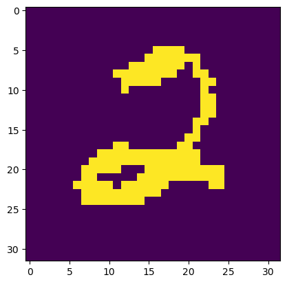

(01) NVAE – play#
Motivation: Play around with the official implementation and figure it out.
Show code cell source
# HIDE CODE
import os, sys
from copy import deepcopy as dc
from os.path import join as pjoin
from IPython.display import display, IFrame, HTML
# tmp & extras dir
git_dir = pjoin(os.environ['HOME'], 'Dropbox/git')
extras_dir = pjoin(git_dir, 'jb-MTMST/_extras')
fig_base_dir = pjoin(git_dir, 'jb-MTMST/figs')
tmp_dir = pjoin(git_dir, 'jb-MTMST/tmp')
sys.path.insert(0, pjoin(git_dir, 'NVAE'))
import utils
# HIDE CODE
import re
import os
import json
import h5py
import torch
import pickle
import joblib
import shutil
import random
import pathlib
import inspect
import logging
import argparse
import warnings
import operator
import functools
import itertools
import collections
import numpy as np
import pandas as pd
from tqdm import tqdm
from rich import print
from datetime import datetime
from os.path import join as pjoin
from prettytable import PrettyTable
from scipy import linalg as sp_lin
from scipy import signal as sp_sig
from scipy import stats as sp_stats
from scipy import ndimage as sp_img
from scipy.spatial import distance as sp_dist
from sklearn.preprocessing import Normalizer
from numpy.ma import masked_where as mwh
from typing import *
import torch
from torch import nn
def print_num_params(module: nn.Module):
t = PrettyTable(['Module Name', 'Num Params'])
for name, m in module.named_modules():
total_params = sum(p.numel() for p in m.parameters() if p.requires_grad)
x = total_params // 1e6
y = total_params // 1e3
if x > 0:
num = f"{np.round(total_params / 1e6, 2):1.1f} M"
elif y > 0:
num = f"{np.round(total_params / 1e3, 2):1.1f} K"
else:
num = total_params
if '.' not in name:
if isinstance(m, type(module)):
t.add_row(["{}".format(m.__class__.__name__), "{}".format(num)])
t.add_row(['---', '---'])
else:
t.add_row([name, "{}".format(num)])
print(t, '\n\n')
# HIDE CODE
ArgsNVAE = collections.namedtuple(
typename='args',
field_names=[
'data',
'dataset',
'batch_size',
'learning_rate',
'learning_rate_min',
'weight_decay',
'weight_decay_norm',
'weight_decay_norm_init',
'weight_decay_norm_anneal',
'epochs',
'warmup_epochs',
'fast_adamax',
'arch_instance',
'kl_anneal_portion',
'kl_const_portion',
'kl_const_coeff',
'num_nf',
'num_x_bits',
'num_latent_scales',
'num_groups_per_scale',
'num_latent_per_group',
'ada_groups',
'min_groups_per_scale',
'num_channels_enc',
'num_preprocess_blocks',
'num_preprocess_cells',
'num_cell_per_cond_enc',
'num_channels_dec',
'num_postprocess_blocks',
'num_postprocess_cells',
'num_cell_per_cond_dec',
'num_mixture_dec',
'num_total_iter',
'master_address',
'local_rank',
'use_se',
'res_dist',
'cont_training',
'distributed',
])
args_default = {
'data': tmp_dir,
'dataset': 'mnist',
'batch_size': 200,
'learning_rate': 1e-2,
'learning_rate_min': 1e-4,
'weight_decay': 3e-4,
'weight_decay_norm': 0,
'weight_decay_norm_init': 10,
'weight_decay_norm_anneal': False,
'epochs': 200,
'warmup_epochs': 5,
'fast_adamax': False,
'arch_instance': 'res_mbconv',
'kl_anneal_portion': 0.3,
'kl_const_portion': 0.0001,
'kl_const_coeff': 0.0001,
'num_nf': 0,
'num_x_bits': 8,
'num_latent_scales': 1,
'num_groups_per_scale': 10,
'num_latent_per_group': 20,
'ada_groups': False,
'min_groups_per_scale': 1,
'num_channels_enc': 32,
'num_preprocess_blocks': 2,
'num_preprocess_cells': 3,
'num_cell_per_cond_enc': 1,
'num_channels_dec': 32,
'num_postprocess_blocks': 2,
'num_postprocess_cells': 3,
'num_cell_per_cond_dec': 1,
'num_mixture_dec': 10,
'num_total_iter': 120000,
'master_address': '126.0.0.1',
'local_rank': 0,
'use_se': False,
'res_dist': False,
'cont_training': False,
'distributed': False,
}
args_mnist = args_default.copy()
args_mnist['num_channels_enc'] = 32
args_mnist['num_channels_dec'] = 32
args_mnist['num_postprocess_cells'] = 3
args_mnist['num_preprocess_cells'] = 3
args_mnist['num_latent_scales'] = 2
args_mnist['num_latent_per_group'] = 20
args_mnist['num_cell_per_cond_enc'] = 2
args_mnist['num_cell_per_cond_dec'] = 2
args_mnist['num_preprocess_blocks'] = 2
args_mnist['num_postprocess_blocks'] = 2
args_mnist['num_groups_per_scale'] = 10
args_mnist['num_nf'] = 0
args_mnist['min_groups_per_scale'] = 4
args_mnist['weight_decay_norm'] = 1e-2
args_mnist['use_se'] = True
args_mnist['res_dist'] = True
args_mnist['ada_groups'] = True
args_mnist['fast_adamax'] = True
args_mnist['batch_size'] = 200
args_mnist['epochs'] = 400
args_mnist = ArgsNVAE(**args_mnist)
arch_instance = utils.get_arch_cells(args_mnist.arch_instance)
arch_instance
{'normal_enc': ['res_bnswish', 'res_bnswish'],
'down_enc': ['res_bnswish', 'res_bnswish'],
'normal_dec': ['mconv_e6k5g0'],
'up_dec': ['mconv_e6k5g0'],
'normal_pre': ['res_bnswish', 'res_bnswish'],
'down_pre': ['res_bnswish', 'res_bnswish'],
'normal_post': ['mconv_e3k5g0'],
'up_post': ['mconv_e3k5g0'],
'ar_nn': ['']}
from model import AutoEncoder
mnist = AutoEncoder(args_mnist, None, utils.get_arch_cells(args_mnist.arch_instance))
# mnist = mnist.cuda()
len log norm: 255
len bn: 214
print_num_params(mnist)
+-------------------+------------+ | Module Name | Num Params | +-------------------+------------+ | AutoEncoder | 33.4 M | | --- | --- | | stem | 352 | | pre_process | 478.8 K | | enc_tower | 19.2 M | | enc0 | 66.0 K | | enc_sampler | 922.8 K | | dec_sampler | 93.3 K | | nf_cells | 0 | | enc_kv | 0 | | dec_kv | 0 | | query | 0 | | dec_tower | 12.4 M | | post_process | 201.3 K | | image_conditional | 290 | +-------------------+------------+
args_mnist.distributed
False
import utils
import datasets
utils, datasets
(<module 'utils' from '/home/hadi/Dropbox/git/NVAE/utils.py'>,
<module 'datasets' from '/home/hadi/Dropbox/git/NVAE/datasets.py'>)
train_queue, valid_queue, num_classes = datasets.get_loaders(args_mnist)
alpha_i = utils.kl_balancer_coeff(
num_scales=mnist.num_latent_scales,
groups_per_scale=mnist.groups_per_scale, fun='square')
alpha_i = alpha_i.cpu()
alpha_i
tensor([1., 1., 1., 1., 1., 2., 2., 2., 2., 2., 2., 2., 2., 2., 2.])
global_step = 120
%%time
for step, x in enumerate(train_queue):
x = x[0] if len(x) > 1 else x
x = utils.pre_process(x, args_mnist.num_x_bits)
with torch.cuda.amp.autocast():
logits, log_q, log_p, kl_all, kl_diag = mnist(x)
output = mnist.decoder_output(logits)
kl_coeff = utils.kl_coeff(global_step, args_mnist.kl_anneal_portion * args_mnist.num_total_iter,
args_mnist.kl_const_portion * args_mnist.num_total_iter, args_mnist.kl_const_coeff)
recon_loss = utils.reconstruction_loss(output, x, crop=mnist.crop_output)
balanced_kl, kl_coeffs, kl_vals = utils.kl_balancer(kl_all, kl_coeff, kl_balance=True, alpha_i=alpha_i)
nelbo_batch = recon_loss + balanced_kl
loss = torch.mean(nelbo_batch)
break
CPU times: user 8min 21s, sys: 1min 9s, total: 9min 31s
Wall time: 1min 6s
balanced_kl.size()
torch.Size([200])
recon_loss.size()
torch.Size([200])
nelbo_batch.size()
torch.Size([200])
loss
tensor(534.0467, grad_fn=<MeanBackward0>)
def do():
for step, x in enumerate(train_queue):
x = x[0] if len(x) > 1 else x
x = x.cuda()
x = utils.pre_process(x, args_mnist.num_x_bits)
with torch.cuda.amp.autocast():
logits, log_q, log_p, kl_all, kl_diag = mnist(x)
output = model.decoder_output(logits)
break
return logits, output
warmup_iters = len(train_queue) * args_mnist.warmup_epochs
args_mnist.epochs, args_mnist.warmup_epochs
(400, 5)
nelbo = utils.AvgrageMeter()
mnist.train();
def init_processes(rank, size, fn, args):
""" Initialize the distributed environment. """
os.environ['MASTER_ADDR'] = args.master_address
os.environ['MASTER_PORT'] = '6020'
torch.cuda.set_device(args.local_rank)
torch.distributed.init_process_group(backend='nccl', init_method='env://', rank=rank, world_size=size)
fn(args)
cleanup()
def cleanup():
torch.distributed.destroy_process_group()
init_processes(0, 1, do, args_mnist)
---------------------------------------------------------------------------
AttributeError Traceback (most recent call last)
Input In [42], in <cell line: 1>()
----> 1 init_processes(0, 1, do, args_mnist)
Input In [40], in init_processes(rank, size, fn, args)
3 os.environ['MASTER_ADDR'] = args.master_address
4 os.environ['MASTER_PORT'] = '6020'
----> 5 torch.cuda.set_device(args.local_rank)
6 torch.distributed.init_process_group(backend='nccl', init_method='env://', rank=rank, world_size=size)
7 fn(args)
AttributeError: 'args' object has no attribute 'local_rank'
logits, log_q, log_p, kl_all, kl_diag = mnist(x)
---------------------------------------------------------------------------
RuntimeError Traceback (most recent call last)
Input In [63], in <cell line: 1>()
----> 1 logits, log_q, log_p, kl_all, kl_diag = mnist(x)
File ~/anaconda3/lib/python3.8/site-packages/torch/nn/modules/module.py:1130, in Module._call_impl(self, *input, **kwargs)
1126 # If we don't have any hooks, we want to skip the rest of the logic in
1127 # this function, and just call forward.
1128 if not (self._backward_hooks or self._forward_hooks or self._forward_pre_hooks or _global_backward_hooks
1129 or _global_forward_hooks or _global_forward_pre_hooks):
-> 1130 return forward_call(*input, **kwargs)
1131 # Do not call functions when jit is used
1132 full_backward_hooks, non_full_backward_hooks = [], []
File ~/Dropbox/git/NVAE/model.py:340, in AutoEncoder.forward(self, x)
339 def forward(self, x):
--> 340 s = self.stem(2 * x - 1.0)
342 # perform pre-processing
343 for cell in self.pre_process:
File ~/anaconda3/lib/python3.8/site-packages/torch/nn/modules/module.py:1130, in Module._call_impl(self, *input, **kwargs)
1126 # If we don't have any hooks, we want to skip the rest of the logic in
1127 # this function, and just call forward.
1128 if not (self._backward_hooks or self._forward_hooks or self._forward_pre_hooks or _global_backward_hooks
1129 or _global_forward_hooks or _global_forward_pre_hooks):
-> 1130 return forward_call(*input, **kwargs)
1131 # Do not call functions when jit is used
1132 full_backward_hooks, non_full_backward_hooks = [], []
File ~/Dropbox/git/NVAE/neural_operations.py:117, in Conv2D.forward(self, x)
114 self.weight_normalized = self.normalize_weight()
116 bias = self.bias
--> 117 return F.conv2d(x, self.weight_normalized, bias, self.stride,
118 self.padding, self.dilation, self.groups)
RuntimeError: Input type (torch.cuda.FloatTensor) and weight type (torch.FloatTensor) should be the same
x.shape
torch.Size([200, 1, 32, 32])
import matplotlib
import seaborn as sns
from matplotlib import pyplot as plt
plt.imshow(x.data.cpu()[10, 0])
plt.show()

a = mnist.dec_tower[29]._ops[0].conv[3]
print(a)
Conv2D(768, 128, kernel_size=(1, 1), stride=(1, 1), bias=False)
print(a.log_weight_norm)
None
def norm(t, dim):
return torch.sqrt(torch.sum(t * t, dim))
a.weight.shape
torch.Size([128, 768, 1, 1])
class Conv2D(nn.Conv2d):
def __init__(self, normalize: bool = True, **kwargs):
print(kwargs)
super(Conv2D, self).__init__(**kwargs)
kkk = {
'normalize': True,
'in_channels': 42,
'out_channels': 15,
'kernel_size': 1,
'stride': 2,
'padding': 0,
'bias': True,
}
aaa = Conv2D(**kkk)
{ 'in_channels': 42, 'out_channels': 15, 'kernel_size': 1, 'stride': 2, 'padding': 0, 'bias': True }
cnn_scheduler = torch.optim.lr_scheduler.CosineAnnealingLR(
cnn_optimizer, float(args.epochs - args.warmup_epochs - 1), eta_min=args.learning_rate_min)
float(args_mnist.epochs - args.warmup_epochs - 1)
394.0
args_mnist.epochs, args.warmup_epochs
(400, 5)
args_mnist.weight_decay
0.0003
args_mnist.learning_rate
0.01
torch.abs
<function torch._VariableFunctionsClass.abs>
b = mnist.pre_process[2]._ops[0].conv_0
print(b)
Conv2D(32, 64, kernel_size=(3, 3), stride=(2, 2), padding=(1, 1))
print(b.log_weight_norm.shape)
torch.Size([64, 1, 1, 1])
b_weight_norm = norm(b.weight, [1, 2, 3])
b_weight_norm
tensor([0.5922, 0.5541, 0.5885, 0.5837, 0.5935, 0.5634, 0.5676, 0.5712, 0.5839,
0.6095, 0.5787, 0.5781, 0.5648, 0.5865, 0.5374, 0.5805, 0.5578, 0.5730,
0.5428, 0.5913, 0.5931, 0.5611, 0.5556, 0.5787, 0.5779, 0.5770, 0.5504,
0.5731, 0.5946, 0.5477, 0.5598, 0.5899, 0.5690, 0.5881, 0.6004, 0.5720,
0.5774, 0.5895, 0.5261, 0.5827, 0.5701, 0.5747, 0.5782, 0.5778, 0.5752,
0.5675, 0.5588, 0.5683, 0.5836, 0.5694, 0.5856, 0.5580, 0.5636, 0.5871,
0.5825, 0.5845, 0.5875, 0.5845, 0.5914, 0.5781, 0.5621, 0.5748, 0.5765,
0.5632], grad_fn=<SqrtBackward0>)
torch.linalg.vector_norm(b.weight, dim=[1, 2, 3])
tensor([0.5922, 0.5541, 0.5885, 0.5837, 0.5935, 0.5634, 0.5676, 0.5712, 0.5839,
0.6095, 0.5787, 0.5781, 0.5648, 0.5865, 0.5374, 0.5805, 0.5578, 0.5730,
0.5428, 0.5913, 0.5931, 0.5611, 0.5556, 0.5787, 0.5779, 0.5770, 0.5504,
0.5731, 0.5946, 0.5477, 0.5598, 0.5899, 0.5690, 0.5881, 0.6004, 0.5720,
0.5774, 0.5895, 0.5261, 0.5827, 0.5701, 0.5747, 0.5782, 0.5778, 0.5752,
0.5675, 0.5588, 0.5683, 0.5836, 0.5694, 0.5856, 0.5580, 0.5636, 0.5871,
0.5825, 0.5845, 0.5875, 0.5845, 0.5914, 0.5781, 0.5621, 0.5748, 0.5765,
0.5632], grad_fn=<LinalgVectorNormBackward0>)
torch.norm()
def norm(t, dim):
return torch.sqrt(torch.sum(t * t, dim))
def normalize_weight_jit(log_weight_norm, weight):
n = torch.exp(log_weight_norm)
wn = torch.linalg.vector_norm(weight, dim=[1, 2, 3])
weight = n * weight / (wn.view(-1, 1, 1, 1) + 1e-6)
return weight
class Conv2D(nn.Conv2d):
def __init__(self, C_in, C_out, kernel_size, stride=1, padding=0, dilation=1, groups=1,
bias=False, normalize_weight=True):
super(Conv2D, self).__init__(C_in, C_out, kernel_size, stride, padding, dilation, groups, bias)
self.normalize_weight = normalize_weight
if weight_norm:
init = torch.linalg.vector_norm(self.weight, dim=[1, 2, 3], keepdim=True)
self.log_weight_norm = nn.Parameter(torch.log(init + 1e-2), requires_grad=True)
def forward(self, x):
return F.conv2d(x, self.normalize_weight(), self.bias, self.stride,
self.padding, self.dilation, self.groups)
def normalize_weight(self):
if self.normalize_weight:
return normalize_weight_jit(self.log_weight_norm, self.weight)
else:
return self.weight
a = mnist.pre_process[2].skip.conv_2
print(a)
Conv2D(32, 16, kernel_size=(1, 1), stride=(2, 2))
args = ArgsNVAE(**args_default)
arch_instance = utils.get_arch_cells(args.arch_instance)
arch_instance
{'normal_enc': ['res_bnswish', 'res_bnswish'],
'down_enc': ['res_bnswish', 'res_bnswish'],
'normal_dec': ['mconv_e6k5g0'],
'up_dec': ['mconv_e6k5g0'],
'normal_pre': ['res_bnswish', 'res_bnswish'],
'down_pre': ['res_bnswish', 'res_bnswish'],
'normal_post': ['mconv_e3k5g0'],
'up_post': ['mconv_e3k5g0'],
'ar_nn': ['']}
from model import AutoEncoder
model = AutoEncoder(args, None, utils.get_arch_cells(args.arch_instance))
len log norm: 128
len bn: 92
print_num_params(model)
+-------------------+------------+ | Module Name | Num Params | +-------------------+------------+ | AutoEncoder | 6.5 M | | --- | --- | | stem | 352 | | pre_process | 474.3 K | | enc_tower | 3.1 M | | enc0 | 16.6 K | | enc_sampler | 461.6 K | | dec_sampler | 46.8 K | | nf_cells | 0 | | enc_kv | 0 | | dec_kv | 0 | | query | 0 | | dec_tower | 2.2 M | | post_process | 198.7 K | | image_conditional | 290 | +-------------------+------------+
args_vanilla = args_default.copy()
args_vanilla['num_channels_enc'] = 32
args_vanilla['num_channels_dec'] = 32
args_vanilla['num_postprocess_cells'] = 3
args_vanilla['num_preprocess_cells'] = 3
args_vanilla['num_latent_scales'] = 1
args_vanilla['num_latent_per_group'] = 20
args_vanilla['num_cell_per_cond_enc'] = 2
args_vanilla['num_cell_per_cond_dec'] = 2
args_vanilla['num_preprocess_blocks'] = 2
args_vanilla['num_postprocess_blocks'] = 2
args_vanilla['num_groups_per_scale'] = 1
args_vanilla['num_nf'] = 0
args_vanilla['min_groups_per_scale'] = 4
args_vanilla['weight_decay_norm_anneal'] = True
args_vanilla['weight_decay_norm_init'] = 10
args_vanilla['use_se'] = True
args_vanilla['res_dist'] = True
args_vanilla['ada_groups'] = True
args_vanilla['fast_adamax'] = True
args_vanilla = ArgsNVAE(**args_vanilla)
vanilla = AutoEncoder(args_vanilla, utils.Writer(0, 'exp'), utils.get_arch_cells(args_vanilla.arch_instance))
len log norm: 45
len bn: 36
print_num_params(mnist)
+-------------------+------------+ | Module Name | Num Params | +-------------------+------------+ | AutoEncoder | 53.0 M | | --- | --- | | stem | 352 | | pre_process | 478.8 K | | enc_tower | 30.2 M | | enc0 | 66.0 K | | enc_sampler | 1.5 M | | dec_sampler | 155.4 K | | nf_cells | 0 | | enc_kv | 0 | | dec_kv | 0 | | query | 0 | | dec_tower | 20.4 M | | post_process | 201.3 K | | image_conditional | 290 | +-------------------+------------+
print_num_params(vanilla)
+-------------------+------------+ | Module Name | Num Params | +-------------------+------------+ | AutoEncoder | 754.6 K | | --- | --- | | stem | 352 | | pre_process | 478.8 K | | enc0 | 16.6 K | | enc_sampler | 46.2 K | | dec_sampler | 0 | | nf_cells | 0 | | enc_kv | 0 | | dec_kv | 0 | | query | 0 | | stem_decoder | 2.8 K | | post_process | 201.3 K | | image_conditional | 290 | +-------------------+------------+
if __name__ == '__main__':
parser = argparse.ArgumentParser('encoder decoder examiner')
# experimental results
parser.add_argument('--root', type=str, default='/tmp/nasvae/expr',
help='location of the results')
parser.add_argument('--save', type=str, default='exp',
help='id used for storing intermediate results')
# data
parser.add_argument('--dataset', type=str, default='mnist',
choices=['cifar10', 'mnist', 'omniglot', 'celeba_64', 'celeba_256',
'imagenet_32', 'ffhq', 'lsun_bedroom_128', 'stacked_mnist',
'lsun_church_128', 'lsun_church_64'],
help='which dataset to use')
parser.add_argument('--data', type=str, default='/tmp/nasvae/data',
help='location of the data corpus')
# optimization
parser.add_argument('--batch_size', type=int, default=200,
help='batch size per GPU')
parser.add_argument('--learning_rate', type=float, default=1e-2,
help='init learning rate')
parser.add_argument('--learning_rate_min', type=float, default=1e-4,
help='min learning rate')
parser.add_argument('--weight_decay', type=float, default=3e-4,
help='weight decay')
parser.add_argument('--weight_decay_norm', type=float, default=0.,
help='The lambda parameter for spectral regularization.')
parser.add_argument('--weight_decay_norm_init', type=float, default=10.,
help='The initial lambda parameter')
parser.add_argument('--weight_decay_norm_anneal', action='store_true', default=False,
help='This flag enables annealing the lambda coefficient from '
'--weight_decay_norm_init to --weight_decay_norm.')
parser.add_argument('--epochs', type=int, default=200,
help='num of training epochs')
parser.add_argument('--warmup_epochs', type=int, default=5,
help='num of training epochs in which lr is warmed up')
parser.add_argument('--fast_adamax', action='store_true', default=False,
help='This flag enables using our optimized adamax.')
parser.add_argument('--arch_instance', type=str, default='res_mbconv',
help='path to the architecture instance')
# KL annealing
parser.add_argument('--kl_anneal_portion', type=float, default=0.3,
help='The portions epochs that KL is annealed')
parser.add_argument('--kl_const_portion', type=float, default=0.0001,
help='The portions epochs that KL is constant at kl_const_coeff')
parser.add_argument('--kl_const_coeff', type=float, default=0.0001,
help='The constant value used for min KL coeff')
# Flow params
parser.add_argument('--num_nf', type=int, default=0,
help='The number of normalizing flow cells per groups. Set this to zero to disable flows.')
parser.add_argument('--num_x_bits', type=int, default=8,
help='The number of bits used for representing data for colored images.')
# latent variables
parser.add_argument('--num_latent_scales', type=int, default=1,
help='the number of latent scales')
parser.add_argument('--num_groups_per_scale', type=int, default=10,
help='number of groups of latent variables per scale')
parser.add_argument('--num_latent_per_group', type=int, default=20,
help='number of channels in latent variables per group')
parser.add_argument('--ada_groups', action='store_true', default=False,
help='Settings this to true will set different number of groups per scale.')
parser.add_argument('--min_groups_per_scale', type=int, default=1,
help='the minimum number of groups per scale.')
# encoder parameters
parser.add_argument('--num_channels_enc', type=int, default=32,
help='number of channels in encoder')
parser.add_argument('--num_preprocess_blocks', type=int, default=2,
help='number of preprocessing blocks')
parser.add_argument('--num_preprocess_cells', type=int, default=3,
help='number of cells per block')
parser.add_argument('--num_cell_per_cond_enc', type=int, default=1,
help='number of cell for each conditional in encoder')
# decoder parameters
parser.add_argument('--num_channels_dec', type=int, default=32,
help='number of channels in decoder')
parser.add_argument('--num_postprocess_blocks', type=int, default=2,
help='number of postprocessing blocks')
parser.add_argument('--num_postprocess_cells', type=int, default=3,
help='number of cells per block')
parser.add_argument('--num_cell_per_cond_dec', type=int, default=1,
help='number of cell for each conditional in decoder')
parser.add_argument('--num_mixture_dec', type=int, default=10,
help='number of mixture components in decoder. set to 1 for Normal decoder.')
# NAS
parser.add_argument('--use_se', action='store_true', default=False,
help='This flag enables squeeze and excitation.')
parser.add_argument('--res_dist', action='store_true', default=False,
help='This flag enables squeeze and excitation.')
parser.add_argument('--cont_training', action='store_true', default=False,
help='This flag enables training from an existing checkpoint.')
# DDP.
parser.add_argument('--num_proc_node', type=int, default=1,
help='The number of nodes in multi node env.')
parser.add_argument('--node_rank', type=int, default=0,
help='The index of node.')
parser.add_argument('--local_rank', type=int, default=0,
help='rank of process in the node')
parser.add_argument('--global_rank', type=int, default=0,
help='rank of process among all the processes')
parser.add_argument('--num_process_per_node', type=int, default=1,
help='number of gpus')
parser.add_argument('--master_address', type=str, default='127.0.0.1',
help='address for master')
parser.add_argument('--seed', type=int, default=1,
help='seed used for initialization')
args = parser.parse_args()
args.save = args.root + '/eval-' + args.save
utils.create_exp_dir(args.save)
args_celeb = args_default.copy()
args_celeb['num_channels_enc'] = 30
args_celeb['num_channels_dec'] = 30
args_celeb['num_postprocess_cells'] = 2
args_celeb['num_preprocess_cells'] = 2
args_celeb['num_latent_scales'] = 5
args_celeb['num_latent_per_group'] = 20
args_celeb['num_cell_per_cond_enc'] = 2
args_celeb['num_cell_per_cond_dec'] = 2
args_celeb['num_preprocess_blocks'] = 1
args_celeb['num_postprocess_blocks'] = 1
args_celeb['num_groups_per_scale'] = 16
args_celeb['num_nf'] = 2
args_celeb['min_groups_per_scale'] = 4
args_celeb['ada_groups'] = True
args_celeb['weight_decay_norm_anneal'] = True
args_celeb['weight_decay_norm_init'] = 10
args_celeb['use_se'] = True
args_celeb['res_dist'] = True
args_celeb['fast_adamax'] = True
args_celeb = ArgsNVAE(**args_celeb)
arch_instance = utils.get_arch_cells(args_celeb.arch_instance)
vae = AutoEncoder(args_celeb, utils.Writer(0, 'exp'), arch_instance)
len log norm: 986
len bn: 460
print_num_params(vae)
+-------------------+------------+ | Module Name | Num Params | +-------------------+------------+ | AutoEncoder | 330.7 M | | --- | --- | | stem | 330 | | pre_process | 68.2 K | | enc_tower | 203.2 M | | enc0 | 923.5 K | | enc_sampler | 3.1 M | | dec_sampler | 310.0 K | | nf_cells | 3.9 M | | enc_kv | 0 | | dec_kv | 0 | | query | 0 | | dec_tower | 119.1 M | | post_process | 32.1 K | | image_conditional | 272 | +-------------------+------------+
vae.image_conditional
Sequential(
(0): ELU(alpha=1.0)
(1): Conv2D(30, 1, kernel_size=(3, 3), stride=(1, 1), padding=(1, 1))
)
print(vae.dec_sampler)
ModuleList( (0): Sequential( (0): ELU(alpha=1.0) (1): Conv2D(960, 40, kernel_size=(1, 1), stride=(1, 1)) ) (1): Sequential( (0): ELU(alpha=1.0) (1): Conv2D(960, 40, kernel_size=(1, 1), stride=(1, 1)) ) (2): Sequential( (0): ELU(alpha=1.0) (1): Conv2D(960, 40, kernel_size=(1, 1), stride=(1, 1)) ) (3): Sequential( (0): ELU(alpha=1.0) (1): Conv2D(480, 40, kernel_size=(1, 1), stride=(1, 1)) ) (4): Sequential( (0): ELU(alpha=1.0) (1): Conv2D(480, 40, kernel_size=(1, 1), stride=(1, 1)) ) (5): Sequential( (0): ELU(alpha=1.0) (1): Conv2D(480, 40, kernel_size=(1, 1), stride=(1, 1)) ) (6): Sequential( (0): ELU(alpha=1.0) (1): Conv2D(480, 40, kernel_size=(1, 1), stride=(1, 1)) ) (7): Sequential( (0): ELU(alpha=1.0) (1): Conv2D(240, 40, kernel_size=(1, 1), stride=(1, 1)) ) (8): Sequential( (0): ELU(alpha=1.0) (1): Conv2D(240, 40, kernel_size=(1, 1), stride=(1, 1)) ) (9): Sequential( (0): ELU(alpha=1.0) (1): Conv2D(240, 40, kernel_size=(1, 1), stride=(1, 1)) ) (10): Sequential( (0): ELU(alpha=1.0) (1): Conv2D(240, 40, kernel_size=(1, 1), stride=(1, 1)) ) (11): Sequential( (0): ELU(alpha=1.0) (1): Conv2D(120, 40, kernel_size=(1, 1), stride=(1, 1)) ) (12): Sequential( (0): ELU(alpha=1.0) (1): Conv2D(120, 40, kernel_size=(1, 1), stride=(1, 1)) ) (13): Sequential( (0): ELU(alpha=1.0) (1): Conv2D(120, 40, kernel_size=(1, 1), stride=(1, 1)) ) (14): Sequential( (0): ELU(alpha=1.0) (1): Conv2D(120, 40, kernel_size=(1, 1), stride=(1, 1)) ) (15): Sequential( (0): ELU(alpha=1.0) (1): Conv2D(120, 40, kernel_size=(1, 1), stride=(1, 1)) ) (16): Sequential( (0): ELU(alpha=1.0) (1): Conv2D(120, 40, kernel_size=(1, 1), stride=(1, 1)) ) (17): Sequential( (0): ELU(alpha=1.0) (1): Conv2D(120, 40, kernel_size=(1, 1), stride=(1, 1)) ) (18): Sequential( (0): ELU(alpha=1.0) (1): Conv2D(120, 40, kernel_size=(1, 1), stride=(1, 1)) ) (19): Sequential( (0): ELU(alpha=1.0) (1): Conv2D(60, 40, kernel_size=(1, 1), stride=(1, 1)) ) (20): Sequential( (0): ELU(alpha=1.0) (1): Conv2D(60, 40, kernel_size=(1, 1), stride=(1, 1)) ) (21): Sequential( (0): ELU(alpha=1.0) (1): Conv2D(60, 40, kernel_size=(1, 1), stride=(1, 1)) ) (22): Sequential( (0): ELU(alpha=1.0) (1): Conv2D(60, 40, kernel_size=(1, 1), stride=(1, 1)) ) (23): Sequential( (0): ELU(alpha=1.0) (1): Conv2D(60, 40, kernel_size=(1, 1), stride=(1, 1)) ) (24): Sequential( (0): ELU(alpha=1.0) (1): Conv2D(60, 40, kernel_size=(1, 1), stride=(1, 1)) ) (25): Sequential( (0): ELU(alpha=1.0) (1): Conv2D(60, 40, kernel_size=(1, 1), stride=(1, 1)) ) (26): Sequential( (0): ELU(alpha=1.0) (1): Conv2D(60, 40, kernel_size=(1, 1), stride=(1, 1)) ) (27): Sequential( (0): ELU(alpha=1.0) (1): Conv2D(60, 40, kernel_size=(1, 1), stride=(1, 1)) ) (28): Sequential( (0): ELU(alpha=1.0) (1): Conv2D(60, 40, kernel_size=(1, 1), stride=(1, 1)) ) (29): Sequential( (0): ELU(alpha=1.0) (1): Conv2D(60, 40, kernel_size=(1, 1), stride=(1, 1)) ) (30): Sequential( (0): ELU(alpha=1.0) (1): Conv2D(60, 40, kernel_size=(1, 1), stride=(1, 1)) ) (31): Sequential( (0): ELU(alpha=1.0) (1): Conv2D(60, 40, kernel_size=(1, 1), stride=(1, 1)) ) (32): Sequential( (0): ELU(alpha=1.0) (1): Conv2D(60, 40, kernel_size=(1, 1), stride=(1, 1)) ) (33): Sequential( (0): ELU(alpha=1.0) (1): Conv2D(60, 40, kernel_size=(1, 1), stride=(1, 1)) ) (34): Sequential( (0): ELU(alpha=1.0) (1): Conv2D(60, 40, kernel_size=(1, 1), stride=(1, 1)) ) )
print(vae.enc_sampler)
ModuleList( (0): Conv2D(960, 40, kernel_size=(3, 3), stride=(1, 1), padding=(1, 1)) (1): Conv2D(960, 40, kernel_size=(3, 3), stride=(1, 1), padding=(1, 1)) (2): Conv2D(960, 40, kernel_size=(3, 3), stride=(1, 1), padding=(1, 1)) (3): Conv2D(960, 40, kernel_size=(3, 3), stride=(1, 1), padding=(1, 1)) (4): Conv2D(480, 40, kernel_size=(3, 3), stride=(1, 1), padding=(1, 1)) (5): Conv2D(480, 40, kernel_size=(3, 3), stride=(1, 1), padding=(1, 1)) (6): Conv2D(480, 40, kernel_size=(3, 3), stride=(1, 1), padding=(1, 1)) (7): Conv2D(480, 40, kernel_size=(3, 3), stride=(1, 1), padding=(1, 1)) (8): Conv2D(240, 40, kernel_size=(3, 3), stride=(1, 1), padding=(1, 1)) (9): Conv2D(240, 40, kernel_size=(3, 3), stride=(1, 1), padding=(1, 1)) (10): Conv2D(240, 40, kernel_size=(3, 3), stride=(1, 1), padding=(1, 1)) (11): Conv2D(240, 40, kernel_size=(3, 3), stride=(1, 1), padding=(1, 1)) (12): Conv2D(120, 40, kernel_size=(3, 3), stride=(1, 1), padding=(1, 1)) (13): Conv2D(120, 40, kernel_size=(3, 3), stride=(1, 1), padding=(1, 1)) (14): Conv2D(120, 40, kernel_size=(3, 3), stride=(1, 1), padding=(1, 1)) (15): Conv2D(120, 40, kernel_size=(3, 3), stride=(1, 1), padding=(1, 1)) (16): Conv2D(120, 40, kernel_size=(3, 3), stride=(1, 1), padding=(1, 1)) (17): Conv2D(120, 40, kernel_size=(3, 3), stride=(1, 1), padding=(1, 1)) (18): Conv2D(120, 40, kernel_size=(3, 3), stride=(1, 1), padding=(1, 1)) (19): Conv2D(120, 40, kernel_size=(3, 3), stride=(1, 1), padding=(1, 1)) (20): Conv2D(60, 40, kernel_size=(3, 3), stride=(1, 1), padding=(1, 1)) (21): Conv2D(60, 40, kernel_size=(3, 3), stride=(1, 1), padding=(1, 1)) (22): Conv2D(60, 40, kernel_size=(3, 3), stride=(1, 1), padding=(1, 1)) (23): Conv2D(60, 40, kernel_size=(3, 3), stride=(1, 1), padding=(1, 1)) (24): Conv2D(60, 40, kernel_size=(3, 3), stride=(1, 1), padding=(1, 1)) (25): Conv2D(60, 40, kernel_size=(3, 3), stride=(1, 1), padding=(1, 1)) (26): Conv2D(60, 40, kernel_size=(3, 3), stride=(1, 1), padding=(1, 1)) (27): Conv2D(60, 40, kernel_size=(3, 3), stride=(1, 1), padding=(1, 1)) (28): Conv2D(60, 40, kernel_size=(3, 3), stride=(1, 1), padding=(1, 1)) (29): Conv2D(60, 40, kernel_size=(3, 3), stride=(1, 1), padding=(1, 1)) (30): Conv2D(60, 40, kernel_size=(3, 3), stride=(1, 1), padding=(1, 1)) (31): Conv2D(60, 40, kernel_size=(3, 3), stride=(1, 1), padding=(1, 1)) (32): Conv2D(60, 40, kernel_size=(3, 3), stride=(1, 1), padding=(1, 1)) (33): Conv2D(60, 40, kernel_size=(3, 3), stride=(1, 1), padding=(1, 1)) (34): Conv2D(60, 40, kernel_size=(3, 3), stride=(1, 1), padding=(1, 1)) (35): Conv2D(60, 40, kernel_size=(3, 3), stride=(1, 1), padding=(1, 1)) )
print(vae.enc_tower)
ModuleList( (0): Cell( (skip): Identity() (_ops): ModuleList( (0): BNSwishConv( (bn_act): SyncBatchNormSwish(60, eps=1e-05, momentum=0.05, affine=True, track_running_stats=True) (conv_0): Conv2D(60, 60, kernel_size=(3, 3), stride=(1, 1), padding=(1, 1)) ) (1): BNSwishConv( (bn_act): SyncBatchNormSwish(60, eps=1e-05, momentum=0.05, affine=True, track_running_stats=True) (conv_0): Conv2D(60, 60, kernel_size=(3, 3), stride=(1, 1), padding=(1, 1)) ) ) (se): SE( (se): Sequential( (0): Linear(in_features=60, out_features=4, bias=True) (1): ReLU(inplace=True) (2): Linear(in_features=4, out_features=60, bias=True) (3): Sigmoid() ) ) ) (1): Cell( (skip): Identity() (_ops): ModuleList( (0): BNSwishConv( (bn_act): SyncBatchNormSwish(60, eps=1e-05, momentum=0.05, affine=True, track_running_stats=True) (conv_0): Conv2D(60, 60, kernel_size=(3, 3), stride=(1, 1), padding=(1, 1)) ) (1): BNSwishConv( (bn_act): SyncBatchNormSwish(60, eps=1e-05, momentum=0.05, affine=True, track_running_stats=True) (conv_0): Conv2D(60, 60, kernel_size=(3, 3), stride=(1, 1), padding=(1, 1)) ) ) (se): SE( (se): Sequential( (0): Linear(in_features=60, out_features=4, bias=True) (1): ReLU(inplace=True) (2): Linear(in_features=4, out_features=60, bias=True) (3): Sigmoid() ) ) ) (2): EncCombinerCell( (conv): Conv2D(60, 60, kernel_size=(1, 1), stride=(1, 1)) ) (3): Cell( (skip): Identity() (_ops): ModuleList( (0): BNSwishConv( (bn_act): SyncBatchNormSwish(60, eps=1e-05, momentum=0.05, affine=True, track_running_stats=True) (conv_0): Conv2D(60, 60, kernel_size=(3, 3), stride=(1, 1), padding=(1, 1)) ) (1): BNSwishConv( (bn_act): SyncBatchNormSwish(60, eps=1e-05, momentum=0.05, affine=True, track_running_stats=True) (conv_0): Conv2D(60, 60, kernel_size=(3, 3), stride=(1, 1), padding=(1, 1)) ) ) (se): SE( (se): Sequential( (0): Linear(in_features=60, out_features=4, bias=True) (1): ReLU(inplace=True) (2): Linear(in_features=4, out_features=60, bias=True) (3): Sigmoid() ) ) ) (4): Cell( (skip): Identity() (_ops): ModuleList( (0): BNSwishConv( (bn_act): SyncBatchNormSwish(60, eps=1e-05, momentum=0.05, affine=True, track_running_stats=True) (conv_0): Conv2D(60, 60, kernel_size=(3, 3), stride=(1, 1), padding=(1, 1)) ) (1): BNSwishConv( (bn_act): SyncBatchNormSwish(60, eps=1e-05, momentum=0.05, affine=True, track_running_stats=True) (conv_0): Conv2D(60, 60, kernel_size=(3, 3), stride=(1, 1), padding=(1, 1)) ) ) (se): SE( (se): Sequential( (0): Linear(in_features=60, out_features=4, bias=True) (1): ReLU(inplace=True) (2): Linear(in_features=4, out_features=60, bias=True) (3): Sigmoid() ) ) ) (5): EncCombinerCell( (conv): Conv2D(60, 60, kernel_size=(1, 1), stride=(1, 1)) ) (6): Cell( (skip): Identity() (_ops): ModuleList( (0): BNSwishConv( (bn_act): SyncBatchNormSwish(60, eps=1e-05, momentum=0.05, affine=True, track_running_stats=True) (conv_0): Conv2D(60, 60, kernel_size=(3, 3), stride=(1, 1), padding=(1, 1)) ) (1): BNSwishConv( (bn_act): SyncBatchNormSwish(60, eps=1e-05, momentum=0.05, affine=True, track_running_stats=True) (conv_0): Conv2D(60, 60, kernel_size=(3, 3), stride=(1, 1), padding=(1, 1)) ) ) (se): SE( (se): Sequential( (0): Linear(in_features=60, out_features=4, bias=True) (1): ReLU(inplace=True) (2): Linear(in_features=4, out_features=60, bias=True) (3): Sigmoid() ) ) ) (7): Cell( (skip): Identity() (_ops): ModuleList( (0): BNSwishConv( (bn_act): SyncBatchNormSwish(60, eps=1e-05, momentum=0.05, affine=True, track_running_stats=True) (conv_0): Conv2D(60, 60, kernel_size=(3, 3), stride=(1, 1), padding=(1, 1)) ) (1): BNSwishConv( (bn_act): SyncBatchNormSwish(60, eps=1e-05, momentum=0.05, affine=True, track_running_stats=True) (conv_0): Conv2D(60, 60, kernel_size=(3, 3), stride=(1, 1), padding=(1, 1)) ) ) (se): SE( (se): Sequential( (0): Linear(in_features=60, out_features=4, bias=True) (1): ReLU(inplace=True) (2): Linear(in_features=4, out_features=60, bias=True) (3): Sigmoid() ) ) ) (8): EncCombinerCell( (conv): Conv2D(60, 60, kernel_size=(1, 1), stride=(1, 1)) ) (9): Cell( (skip): Identity() (_ops): ModuleList( (0): BNSwishConv( (bn_act): SyncBatchNormSwish(60, eps=1e-05, momentum=0.05, affine=True, track_running_stats=True) (conv_0): Conv2D(60, 60, kernel_size=(3, 3), stride=(1, 1), padding=(1, 1)) ) (1): BNSwishConv( (bn_act): SyncBatchNormSwish(60, eps=1e-05, momentum=0.05, affine=True, track_running_stats=True) (conv_0): Conv2D(60, 60, kernel_size=(3, 3), stride=(1, 1), padding=(1, 1)) ) ) (se): SE( (se): Sequential( (0): Linear(in_features=60, out_features=4, bias=True) (1): ReLU(inplace=True) (2): Linear(in_features=4, out_features=60, bias=True) (3): Sigmoid() ) ) ) (10): Cell( (skip): Identity() (_ops): ModuleList( (0): BNSwishConv( (bn_act): SyncBatchNormSwish(60, eps=1e-05, momentum=0.05, affine=True, track_running_stats=True) (conv_0): Conv2D(60, 60, kernel_size=(3, 3), stride=(1, 1), padding=(1, 1)) ) (1): BNSwishConv( (bn_act): SyncBatchNormSwish(60, eps=1e-05, momentum=0.05, affine=True, track_running_stats=True) (conv_0): Conv2D(60, 60, kernel_size=(3, 3), stride=(1, 1), padding=(1, 1)) ) ) (se): SE( (se): Sequential( (0): Linear(in_features=60, out_features=4, bias=True) (1): ReLU(inplace=True) (2): Linear(in_features=4, out_features=60, bias=True) (3): Sigmoid() ) ) ) (11): EncCombinerCell( (conv): Conv2D(60, 60, kernel_size=(1, 1), stride=(1, 1)) ) (12): Cell( (skip): Identity() (_ops): ModuleList( (0): BNSwishConv( (bn_act): SyncBatchNormSwish(60, eps=1e-05, momentum=0.05, affine=True, track_running_stats=True) (conv_0): Conv2D(60, 60, kernel_size=(3, 3), stride=(1, 1), padding=(1, 1)) ) (1): BNSwishConv( (bn_act): SyncBatchNormSwish(60, eps=1e-05, momentum=0.05, affine=True, track_running_stats=True) (conv_0): Conv2D(60, 60, kernel_size=(3, 3), stride=(1, 1), padding=(1, 1)) ) ) (se): SE( (se): Sequential( (0): Linear(in_features=60, out_features=4, bias=True) (1): ReLU(inplace=True) (2): Linear(in_features=4, out_features=60, bias=True) (3): Sigmoid() ) ) ) (13): Cell( (skip): Identity() (_ops): ModuleList( (0): BNSwishConv( (bn_act): SyncBatchNormSwish(60, eps=1e-05, momentum=0.05, affine=True, track_running_stats=True) (conv_0): Conv2D(60, 60, kernel_size=(3, 3), stride=(1, 1), padding=(1, 1)) ) (1): BNSwishConv( (bn_act): SyncBatchNormSwish(60, eps=1e-05, momentum=0.05, affine=True, track_running_stats=True) (conv_0): Conv2D(60, 60, kernel_size=(3, 3), stride=(1, 1), padding=(1, 1)) ) ) (se): SE( (se): Sequential( (0): Linear(in_features=60, out_features=4, bias=True) (1): ReLU(inplace=True) (2): Linear(in_features=4, out_features=60, bias=True) (3): Sigmoid() ) ) ) (14): EncCombinerCell( (conv): Conv2D(60, 60, kernel_size=(1, 1), stride=(1, 1)) ) (15): Cell( (skip): Identity() (_ops): ModuleList( (0): BNSwishConv( (bn_act): SyncBatchNormSwish(60, eps=1e-05, momentum=0.05, affine=True, track_running_stats=True) (conv_0): Conv2D(60, 60, kernel_size=(3, 3), stride=(1, 1), padding=(1, 1)) ) (1): BNSwishConv( (bn_act): SyncBatchNormSwish(60, eps=1e-05, momentum=0.05, affine=True, track_running_stats=True) (conv_0): Conv2D(60, 60, kernel_size=(3, 3), stride=(1, 1), padding=(1, 1)) ) ) (se): SE( (se): Sequential( (0): Linear(in_features=60, out_features=4, bias=True) (1): ReLU(inplace=True) (2): Linear(in_features=4, out_features=60, bias=True) (3): Sigmoid() ) ) ) (16): Cell( (skip): Identity() (_ops): ModuleList( (0): BNSwishConv( (bn_act): SyncBatchNormSwish(60, eps=1e-05, momentum=0.05, affine=True, track_running_stats=True) (conv_0): Conv2D(60, 60, kernel_size=(3, 3), stride=(1, 1), padding=(1, 1)) ) (1): BNSwishConv( (bn_act): SyncBatchNormSwish(60, eps=1e-05, momentum=0.05, affine=True, track_running_stats=True) (conv_0): Conv2D(60, 60, kernel_size=(3, 3), stride=(1, 1), padding=(1, 1)) ) ) (se): SE( (se): Sequential( (0): Linear(in_features=60, out_features=4, bias=True) (1): ReLU(inplace=True) (2): Linear(in_features=4, out_features=60, bias=True) (3): Sigmoid() ) ) ) (17): EncCombinerCell( (conv): Conv2D(60, 60, kernel_size=(1, 1), stride=(1, 1)) ) (18): Cell( (skip): Identity() (_ops): ModuleList( (0): BNSwishConv( (bn_act): SyncBatchNormSwish(60, eps=1e-05, momentum=0.05, affine=True, track_running_stats=True) (conv_0): Conv2D(60, 60, kernel_size=(3, 3), stride=(1, 1), padding=(1, 1)) ) (1): BNSwishConv( (bn_act): SyncBatchNormSwish(60, eps=1e-05, momentum=0.05, affine=True, track_running_stats=True) (conv_0): Conv2D(60, 60, kernel_size=(3, 3), stride=(1, 1), padding=(1, 1)) ) ) (se): SE( (se): Sequential( (0): Linear(in_features=60, out_features=4, bias=True) (1): ReLU(inplace=True) (2): Linear(in_features=4, out_features=60, bias=True) (3): Sigmoid() ) ) ) (19): Cell( (skip): Identity() (_ops): ModuleList( (0): BNSwishConv( (bn_act): SyncBatchNormSwish(60, eps=1e-05, momentum=0.05, affine=True, track_running_stats=True) (conv_0): Conv2D(60, 60, kernel_size=(3, 3), stride=(1, 1), padding=(1, 1)) ) (1): BNSwishConv( (bn_act): SyncBatchNormSwish(60, eps=1e-05, momentum=0.05, affine=True, track_running_stats=True) (conv_0): Conv2D(60, 60, kernel_size=(3, 3), stride=(1, 1), padding=(1, 1)) ) ) (se): SE( (se): Sequential( (0): Linear(in_features=60, out_features=4, bias=True) (1): ReLU(inplace=True) (2): Linear(in_features=4, out_features=60, bias=True) (3): Sigmoid() ) ) ) (20): EncCombinerCell( (conv): Conv2D(60, 60, kernel_size=(1, 1), stride=(1, 1)) ) (21): Cell( (skip): Identity() (_ops): ModuleList( (0): BNSwishConv( (bn_act): SyncBatchNormSwish(60, eps=1e-05, momentum=0.05, affine=True, track_running_stats=True) (conv_0): Conv2D(60, 60, kernel_size=(3, 3), stride=(1, 1), padding=(1, 1)) ) (1): BNSwishConv( (bn_act): SyncBatchNormSwish(60, eps=1e-05, momentum=0.05, affine=True, track_running_stats=True) (conv_0): Conv2D(60, 60, kernel_size=(3, 3), stride=(1, 1), padding=(1, 1)) ) ) (se): SE( (se): Sequential( (0): Linear(in_features=60, out_features=4, bias=True) (1): ReLU(inplace=True) (2): Linear(in_features=4, out_features=60, bias=True) (3): Sigmoid() ) ) ) (22): Cell( (skip): Identity() (_ops): ModuleList( (0): BNSwishConv( (bn_act): SyncBatchNormSwish(60, eps=1e-05, momentum=0.05, affine=True, track_running_stats=True) (conv_0): Conv2D(60, 60, kernel_size=(3, 3), stride=(1, 1), padding=(1, 1)) ) (1): BNSwishConv( (bn_act): SyncBatchNormSwish(60, eps=1e-05, momentum=0.05, affine=True, track_running_stats=True) (conv_0): Conv2D(60, 60, kernel_size=(3, 3), stride=(1, 1), padding=(1, 1)) ) ) (se): SE( (se): Sequential( (0): Linear(in_features=60, out_features=4, bias=True) (1): ReLU(inplace=True) (2): Linear(in_features=4, out_features=60, bias=True) (3): Sigmoid() ) ) ) (23): EncCombinerCell( (conv): Conv2D(60, 60, kernel_size=(1, 1), stride=(1, 1)) ) (24): Cell( (skip): Identity() (_ops): ModuleList( (0): BNSwishConv( (bn_act): SyncBatchNormSwish(60, eps=1e-05, momentum=0.05, affine=True, track_running_stats=True) (conv_0): Conv2D(60, 60, kernel_size=(3, 3), stride=(1, 1), padding=(1, 1)) ) (1): BNSwishConv( (bn_act): SyncBatchNormSwish(60, eps=1e-05, momentum=0.05, affine=True, track_running_stats=True) (conv_0): Conv2D(60, 60, kernel_size=(3, 3), stride=(1, 1), padding=(1, 1)) ) ) (se): SE( (se): Sequential( (0): Linear(in_features=60, out_features=4, bias=True) (1): ReLU(inplace=True) (2): Linear(in_features=4, out_features=60, bias=True) (3): Sigmoid() ) ) ) (25): Cell( (skip): Identity() (_ops): ModuleList( (0): BNSwishConv( (bn_act): SyncBatchNormSwish(60, eps=1e-05, momentum=0.05, affine=True, track_running_stats=True) (conv_0): Conv2D(60, 60, kernel_size=(3, 3), stride=(1, 1), padding=(1, 1)) ) (1): BNSwishConv( (bn_act): SyncBatchNormSwish(60, eps=1e-05, momentum=0.05, affine=True, track_running_stats=True) (conv_0): Conv2D(60, 60, kernel_size=(3, 3), stride=(1, 1), padding=(1, 1)) ) ) (se): SE( (se): Sequential( (0): Linear(in_features=60, out_features=4, bias=True) (1): ReLU(inplace=True) (2): Linear(in_features=4, out_features=60, bias=True) (3): Sigmoid() ) ) ) (26): EncCombinerCell( (conv): Conv2D(60, 60, kernel_size=(1, 1), stride=(1, 1)) ) (27): Cell( (skip): Identity() (_ops): ModuleList( (0): BNSwishConv( (bn_act): SyncBatchNormSwish(60, eps=1e-05, momentum=0.05, affine=True, track_running_stats=True) (conv_0): Conv2D(60, 60, kernel_size=(3, 3), stride=(1, 1), padding=(1, 1)) ) (1): BNSwishConv( (bn_act): SyncBatchNormSwish(60, eps=1e-05, momentum=0.05, affine=True, track_running_stats=True) (conv_0): Conv2D(60, 60, kernel_size=(3, 3), stride=(1, 1), padding=(1, 1)) ) ) (se): SE( (se): Sequential( (0): Linear(in_features=60, out_features=4, bias=True) (1): ReLU(inplace=True) (2): Linear(in_features=4, out_features=60, bias=True) (3): Sigmoid() ) ) ) (28): Cell( (skip): Identity() (_ops): ModuleList( (0): BNSwishConv( (bn_act): SyncBatchNormSwish(60, eps=1e-05, momentum=0.05, affine=True, track_running_stats=True) (conv_0): Conv2D(60, 60, kernel_size=(3, 3), stride=(1, 1), padding=(1, 1)) ) (1): BNSwishConv( (bn_act): SyncBatchNormSwish(60, eps=1e-05, momentum=0.05, affine=True, track_running_stats=True) (conv_0): Conv2D(60, 60, kernel_size=(3, 3), stride=(1, 1), padding=(1, 1)) ) ) (se): SE( (se): Sequential( (0): Linear(in_features=60, out_features=4, bias=True) (1): ReLU(inplace=True) (2): Linear(in_features=4, out_features=60, bias=True) (3): Sigmoid() ) ) ) (29): EncCombinerCell( (conv): Conv2D(60, 60, kernel_size=(1, 1), stride=(1, 1)) ) (30): Cell( (skip): Identity() (_ops): ModuleList( (0): BNSwishConv( (bn_act): SyncBatchNormSwish(60, eps=1e-05, momentum=0.05, affine=True, track_running_stats=True) (conv_0): Conv2D(60, 60, kernel_size=(3, 3), stride=(1, 1), padding=(1, 1)) ) (1): BNSwishConv( (bn_act): SyncBatchNormSwish(60, eps=1e-05, momentum=0.05, affine=True, track_running_stats=True) (conv_0): Conv2D(60, 60, kernel_size=(3, 3), stride=(1, 1), padding=(1, 1)) ) ) (se): SE( (se): Sequential( (0): Linear(in_features=60, out_features=4, bias=True) (1): ReLU(inplace=True) (2): Linear(in_features=4, out_features=60, bias=True) (3): Sigmoid() ) ) ) (31): Cell( (skip): Identity() (_ops): ModuleList( (0): BNSwishConv( (bn_act): SyncBatchNormSwish(60, eps=1e-05, momentum=0.05, affine=True, track_running_stats=True) (conv_0): Conv2D(60, 60, kernel_size=(3, 3), stride=(1, 1), padding=(1, 1)) ) (1): BNSwishConv( (bn_act): SyncBatchNormSwish(60, eps=1e-05, momentum=0.05, affine=True, track_running_stats=True) (conv_0): Conv2D(60, 60, kernel_size=(3, 3), stride=(1, 1), padding=(1, 1)) ) ) (se): SE( (se): Sequential( (0): Linear(in_features=60, out_features=4, bias=True) (1): ReLU(inplace=True) (2): Linear(in_features=4, out_features=60, bias=True) (3): Sigmoid() ) ) ) (32): EncCombinerCell( (conv): Conv2D(60, 60, kernel_size=(1, 1), stride=(1, 1)) ) (33): Cell( (skip): Identity() (_ops): ModuleList( (0): BNSwishConv( (bn_act): SyncBatchNormSwish(60, eps=1e-05, momentum=0.05, affine=True, track_running_stats=True) (conv_0): Conv2D(60, 60, kernel_size=(3, 3), stride=(1, 1), padding=(1, 1)) ) (1): BNSwishConv( (bn_act): SyncBatchNormSwish(60, eps=1e-05, momentum=0.05, affine=True, track_running_stats=True) (conv_0): Conv2D(60, 60, kernel_size=(3, 3), stride=(1, 1), padding=(1, 1)) ) ) (se): SE( (se): Sequential( (0): Linear(in_features=60, out_features=4, bias=True) (1): ReLU(inplace=True) (2): Linear(in_features=4, out_features=60, bias=True) (3): Sigmoid() ) ) ) (34): Cell( (skip): Identity() (_ops): ModuleList( (0): BNSwishConv( (bn_act): SyncBatchNormSwish(60, eps=1e-05, momentum=0.05, affine=True, track_running_stats=True) (conv_0): Conv2D(60, 60, kernel_size=(3, 3), stride=(1, 1), padding=(1, 1)) ) (1): BNSwishConv( (bn_act): SyncBatchNormSwish(60, eps=1e-05, momentum=0.05, affine=True, track_running_stats=True) (conv_0): Conv2D(60, 60, kernel_size=(3, 3), stride=(1, 1), padding=(1, 1)) ) ) (se): SE( (se): Sequential( (0): Linear(in_features=60, out_features=4, bias=True) (1): ReLU(inplace=True) (2): Linear(in_features=4, out_features=60, bias=True) (3): Sigmoid() ) ) ) (35): EncCombinerCell( (conv): Conv2D(60, 60, kernel_size=(1, 1), stride=(1, 1)) ) (36): Cell( (skip): Identity() (_ops): ModuleList( (0): BNSwishConv( (bn_act): SyncBatchNormSwish(60, eps=1e-05, momentum=0.05, affine=True, track_running_stats=True) (conv_0): Conv2D(60, 60, kernel_size=(3, 3), stride=(1, 1), padding=(1, 1)) ) (1): BNSwishConv( (bn_act): SyncBatchNormSwish(60, eps=1e-05, momentum=0.05, affine=True, track_running_stats=True) (conv_0): Conv2D(60, 60, kernel_size=(3, 3), stride=(1, 1), padding=(1, 1)) ) ) (se): SE( (se): Sequential( (0): Linear(in_features=60, out_features=4, bias=True) (1): ReLU(inplace=True) (2): Linear(in_features=4, out_features=60, bias=True) (3): Sigmoid() ) ) ) (37): Cell( (skip): Identity() (_ops): ModuleList( (0): BNSwishConv( (bn_act): SyncBatchNormSwish(60, eps=1e-05, momentum=0.05, affine=True, track_running_stats=True) (conv_0): Conv2D(60, 60, kernel_size=(3, 3), stride=(1, 1), padding=(1, 1)) ) (1): BNSwishConv( (bn_act): SyncBatchNormSwish(60, eps=1e-05, momentum=0.05, affine=True, track_running_stats=True) (conv_0): Conv2D(60, 60, kernel_size=(3, 3), stride=(1, 1), padding=(1, 1)) ) ) (se): SE( (se): Sequential( (0): Linear(in_features=60, out_features=4, bias=True) (1): ReLU(inplace=True) (2): Linear(in_features=4, out_features=60, bias=True) (3): Sigmoid() ) ) ) (38): EncCombinerCell( (conv): Conv2D(60, 60, kernel_size=(1, 1), stride=(1, 1)) ) (39): Cell( (skip): Identity() (_ops): ModuleList( (0): BNSwishConv( (bn_act): SyncBatchNormSwish(60, eps=1e-05, momentum=0.05, affine=True, track_running_stats=True) (conv_0): Conv2D(60, 60, kernel_size=(3, 3), stride=(1, 1), padding=(1, 1)) ) (1): BNSwishConv( (bn_act): SyncBatchNormSwish(60, eps=1e-05, momentum=0.05, affine=True, track_running_stats=True) (conv_0): Conv2D(60, 60, kernel_size=(3, 3), stride=(1, 1), padding=(1, 1)) ) ) (se): SE( (se): Sequential( (0): Linear(in_features=60, out_features=4, bias=True) (1): ReLU(inplace=True) (2): Linear(in_features=4, out_features=60, bias=True) (3): Sigmoid() ) ) ) (40): Cell( (skip): Identity() (_ops): ModuleList( (0): BNSwishConv( (bn_act): SyncBatchNormSwish(60, eps=1e-05, momentum=0.05, affine=True, track_running_stats=True) (conv_0): Conv2D(60, 60, kernel_size=(3, 3), stride=(1, 1), padding=(1, 1)) ) (1): BNSwishConv( (bn_act): SyncBatchNormSwish(60, eps=1e-05, momentum=0.05, affine=True, track_running_stats=True) (conv_0): Conv2D(60, 60, kernel_size=(3, 3), stride=(1, 1), padding=(1, 1)) ) ) (se): SE( (se): Sequential( (0): Linear(in_features=60, out_features=4, bias=True) (1): ReLU(inplace=True) (2): Linear(in_features=4, out_features=60, bias=True) (3): Sigmoid() ) ) ) (41): EncCombinerCell( (conv): Conv2D(60, 60, kernel_size=(1, 1), stride=(1, 1)) ) (42): Cell( (skip): Identity() (_ops): ModuleList( (0): BNSwishConv( (bn_act): SyncBatchNormSwish(60, eps=1e-05, momentum=0.05, affine=True, track_running_stats=True) (conv_0): Conv2D(60, 60, kernel_size=(3, 3), stride=(1, 1), padding=(1, 1)) ) (1): BNSwishConv( (bn_act): SyncBatchNormSwish(60, eps=1e-05, momentum=0.05, affine=True, track_running_stats=True) (conv_0): Conv2D(60, 60, kernel_size=(3, 3), stride=(1, 1), padding=(1, 1)) ) ) (se): SE( (se): Sequential( (0): Linear(in_features=60, out_features=4, bias=True) (1): ReLU(inplace=True) (2): Linear(in_features=4, out_features=60, bias=True) (3): Sigmoid() ) ) ) (43): Cell( (skip): Identity() (_ops): ModuleList( (0): BNSwishConv( (bn_act): SyncBatchNormSwish(60, eps=1e-05, momentum=0.05, affine=True, track_running_stats=True) (conv_0): Conv2D(60, 60, kernel_size=(3, 3), stride=(1, 1), padding=(1, 1)) ) (1): BNSwishConv( (bn_act): SyncBatchNormSwish(60, eps=1e-05, momentum=0.05, affine=True, track_running_stats=True) (conv_0): Conv2D(60, 60, kernel_size=(3, 3), stride=(1, 1), padding=(1, 1)) ) ) (se): SE( (se): Sequential( (0): Linear(in_features=60, out_features=4, bias=True) (1): ReLU(inplace=True) (2): Linear(in_features=4, out_features=60, bias=True) (3): Sigmoid() ) ) ) (44): EncCombinerCell( (conv): Conv2D(60, 60, kernel_size=(1, 1), stride=(1, 1)) ) (45): Cell( (skip): Identity() (_ops): ModuleList( (0): BNSwishConv( (bn_act): SyncBatchNormSwish(60, eps=1e-05, momentum=0.05, affine=True, track_running_stats=True) (conv_0): Conv2D(60, 60, kernel_size=(3, 3), stride=(1, 1), padding=(1, 1)) ) (1): BNSwishConv( (bn_act): SyncBatchNormSwish(60, eps=1e-05, momentum=0.05, affine=True, track_running_stats=True) (conv_0): Conv2D(60, 60, kernel_size=(3, 3), stride=(1, 1), padding=(1, 1)) ) ) (se): SE( (se): Sequential( (0): Linear(in_features=60, out_features=4, bias=True) (1): ReLU(inplace=True) (2): Linear(in_features=4, out_features=60, bias=True) (3): Sigmoid() ) ) ) (46): Cell( (skip): Identity() (_ops): ModuleList( (0): BNSwishConv( (bn_act): SyncBatchNormSwish(60, eps=1e-05, momentum=0.05, affine=True, track_running_stats=True) (conv_0): Conv2D(60, 60, kernel_size=(3, 3), stride=(1, 1), padding=(1, 1)) ) (1): BNSwishConv( (bn_act): SyncBatchNormSwish(60, eps=1e-05, momentum=0.05, affine=True, track_running_stats=True) (conv_0): Conv2D(60, 60, kernel_size=(3, 3), stride=(1, 1), padding=(1, 1)) ) ) (se): SE( (se): Sequential( (0): Linear(in_features=60, out_features=4, bias=True) (1): ReLU(inplace=True) (2): Linear(in_features=4, out_features=60, bias=True) (3): Sigmoid() ) ) ) (47): EncCombinerCell( (conv): Conv2D(60, 60, kernel_size=(1, 1), stride=(1, 1)) ) (48): Cell( (skip): FactorizedReduce( (conv_1): Conv2D(60, 30, kernel_size=(1, 1), stride=(2, 2)) (conv_2): Conv2D(60, 30, kernel_size=(1, 1), stride=(2, 2)) (conv_3): Conv2D(60, 30, kernel_size=(1, 1), stride=(2, 2)) (conv_4): Conv2D(60, 30, kernel_size=(1, 1), stride=(2, 2)) ) (_ops): ModuleList( (0): BNSwishConv( (bn_act): SyncBatchNormSwish(60, eps=1e-05, momentum=0.05, affine=True, track_running_stats=True) (conv_0): Conv2D(60, 120, kernel_size=(3, 3), stride=(2, 2), padding=(1, 1)) ) (1): BNSwishConv( (bn_act): SyncBatchNormSwish(120, eps=1e-05, momentum=0.05, affine=True, track_running_stats=True) (conv_0): Conv2D(120, 120, kernel_size=(3, 3), stride=(1, 1), padding=(1, 1)) ) ) (se): SE( (se): Sequential( (0): Linear(in_features=120, out_features=7, bias=True) (1): ReLU(inplace=True) (2): Linear(in_features=7, out_features=120, bias=True) (3): Sigmoid() ) ) ) (49): Cell( (skip): Identity() (_ops): ModuleList( (0): BNSwishConv( (bn_act): SyncBatchNormSwish(120, eps=1e-05, momentum=0.05, affine=True, track_running_stats=True) (conv_0): Conv2D(120, 120, kernel_size=(3, 3), stride=(1, 1), padding=(1, 1)) ) (1): BNSwishConv( (bn_act): SyncBatchNormSwish(120, eps=1e-05, momentum=0.05, affine=True, track_running_stats=True) (conv_0): Conv2D(120, 120, kernel_size=(3, 3), stride=(1, 1), padding=(1, 1)) ) ) (se): SE( (se): Sequential( (0): Linear(in_features=120, out_features=7, bias=True) (1): ReLU(inplace=True) (2): Linear(in_features=7, out_features=120, bias=True) (3): Sigmoid() ) ) ) (50): Cell( (skip): Identity() (_ops): ModuleList( (0): BNSwishConv( (bn_act): SyncBatchNormSwish(120, eps=1e-05, momentum=0.05, affine=True, track_running_stats=True) (conv_0): Conv2D(120, 120, kernel_size=(3, 3), stride=(1, 1), padding=(1, 1)) ) (1): BNSwishConv( (bn_act): SyncBatchNormSwish(120, eps=1e-05, momentum=0.05, affine=True, track_running_stats=True) (conv_0): Conv2D(120, 120, kernel_size=(3, 3), stride=(1, 1), padding=(1, 1)) ) ) (se): SE( (se): Sequential( (0): Linear(in_features=120, out_features=7, bias=True) (1): ReLU(inplace=True) (2): Linear(in_features=7, out_features=120, bias=True) (3): Sigmoid() ) ) ) (51): EncCombinerCell( (conv): Conv2D(120, 120, kernel_size=(1, 1), stride=(1, 1)) ) (52): Cell( (skip): Identity() (_ops): ModuleList( (0): BNSwishConv( (bn_act): SyncBatchNormSwish(120, eps=1e-05, momentum=0.05, affine=True, track_running_stats=True) (conv_0): Conv2D(120, 120, kernel_size=(3, 3), stride=(1, 1), padding=(1, 1)) ) (1): BNSwishConv( (bn_act): SyncBatchNormSwish(120, eps=1e-05, momentum=0.05, affine=True, track_running_stats=True) (conv_0): Conv2D(120, 120, kernel_size=(3, 3), stride=(1, 1), padding=(1, 1)) ) ) (se): SE( (se): Sequential( (0): Linear(in_features=120, out_features=7, bias=True) (1): ReLU(inplace=True) (2): Linear(in_features=7, out_features=120, bias=True) (3): Sigmoid() ) ) ) (53): Cell( (skip): Identity() (_ops): ModuleList( (0): BNSwishConv( (bn_act): SyncBatchNormSwish(120, eps=1e-05, momentum=0.05, affine=True, track_running_stats=True) (conv_0): Conv2D(120, 120, kernel_size=(3, 3), stride=(1, 1), padding=(1, 1)) ) (1): BNSwishConv( (bn_act): SyncBatchNormSwish(120, eps=1e-05, momentum=0.05, affine=True, track_running_stats=True) (conv_0): Conv2D(120, 120, kernel_size=(3, 3), stride=(1, 1), padding=(1, 1)) ) ) (se): SE( (se): Sequential( (0): Linear(in_features=120, out_features=7, bias=True) (1): ReLU(inplace=True) (2): Linear(in_features=7, out_features=120, bias=True) (3): Sigmoid() ) ) ) (54): EncCombinerCell( (conv): Conv2D(120, 120, kernel_size=(1, 1), stride=(1, 1)) ) (55): Cell( (skip): Identity() (_ops): ModuleList( (0): BNSwishConv( (bn_act): SyncBatchNormSwish(120, eps=1e-05, momentum=0.05, affine=True, track_running_stats=True) (conv_0): Conv2D(120, 120, kernel_size=(3, 3), stride=(1, 1), padding=(1, 1)) ) (1): BNSwishConv( (bn_act): SyncBatchNormSwish(120, eps=1e-05, momentum=0.05, affine=True, track_running_stats=True) (conv_0): Conv2D(120, 120, kernel_size=(3, 3), stride=(1, 1), padding=(1, 1)) ) ) (se): SE( (se): Sequential( (0): Linear(in_features=120, out_features=7, bias=True) (1): ReLU(inplace=True) (2): Linear(in_features=7, out_features=120, bias=True) (3): Sigmoid() ) ) ) (56): Cell( (skip): Identity() (_ops): ModuleList( (0): BNSwishConv( (bn_act): SyncBatchNormSwish(120, eps=1e-05, momentum=0.05, affine=True, track_running_stats=True) (conv_0): Conv2D(120, 120, kernel_size=(3, 3), stride=(1, 1), padding=(1, 1)) ) (1): BNSwishConv( (bn_act): SyncBatchNormSwish(120, eps=1e-05, momentum=0.05, affine=True, track_running_stats=True) (conv_0): Conv2D(120, 120, kernel_size=(3, 3), stride=(1, 1), padding=(1, 1)) ) ) (se): SE( (se): Sequential( (0): Linear(in_features=120, out_features=7, bias=True) (1): ReLU(inplace=True) (2): Linear(in_features=7, out_features=120, bias=True) (3): Sigmoid() ) ) ) (57): EncCombinerCell( (conv): Conv2D(120, 120, kernel_size=(1, 1), stride=(1, 1)) ) (58): Cell( (skip): Identity() (_ops): ModuleList( (0): BNSwishConv( (bn_act): SyncBatchNormSwish(120, eps=1e-05, momentum=0.05, affine=True, track_running_stats=True) (conv_0): Conv2D(120, 120, kernel_size=(3, 3), stride=(1, 1), padding=(1, 1)) ) (1): BNSwishConv( (bn_act): SyncBatchNormSwish(120, eps=1e-05, momentum=0.05, affine=True, track_running_stats=True) (conv_0): Conv2D(120, 120, kernel_size=(3, 3), stride=(1, 1), padding=(1, 1)) ) ) (se): SE( (se): Sequential( (0): Linear(in_features=120, out_features=7, bias=True) (1): ReLU(inplace=True) (2): Linear(in_features=7, out_features=120, bias=True) (3): Sigmoid() ) ) ) (59): Cell( (skip): Identity() (_ops): ModuleList( (0): BNSwishConv( (bn_act): SyncBatchNormSwish(120, eps=1e-05, momentum=0.05, affine=True, track_running_stats=True) (conv_0): Conv2D(120, 120, kernel_size=(3, 3), stride=(1, 1), padding=(1, 1)) ) (1): BNSwishConv( (bn_act): SyncBatchNormSwish(120, eps=1e-05, momentum=0.05, affine=True, track_running_stats=True) (conv_0): Conv2D(120, 120, kernel_size=(3, 3), stride=(1, 1), padding=(1, 1)) ) ) (se): SE( (se): Sequential( (0): Linear(in_features=120, out_features=7, bias=True) (1): ReLU(inplace=True) (2): Linear(in_features=7, out_features=120, bias=True) (3): Sigmoid() ) ) ) (60): EncCombinerCell( (conv): Conv2D(120, 120, kernel_size=(1, 1), stride=(1, 1)) ) (61): Cell( (skip): Identity() (_ops): ModuleList( (0): BNSwishConv( (bn_act): SyncBatchNormSwish(120, eps=1e-05, momentum=0.05, affine=True, track_running_stats=True) (conv_0): Conv2D(120, 120, kernel_size=(3, 3), stride=(1, 1), padding=(1, 1)) ) (1): BNSwishConv( (bn_act): SyncBatchNormSwish(120, eps=1e-05, momentum=0.05, affine=True, track_running_stats=True) (conv_0): Conv2D(120, 120, kernel_size=(3, 3), stride=(1, 1), padding=(1, 1)) ) ) (se): SE( (se): Sequential( (0): Linear(in_features=120, out_features=7, bias=True) (1): ReLU(inplace=True) (2): Linear(in_features=7, out_features=120, bias=True) (3): Sigmoid() ) ) ) (62): Cell( (skip): Identity() (_ops): ModuleList( (0): BNSwishConv( (bn_act): SyncBatchNormSwish(120, eps=1e-05, momentum=0.05, affine=True, track_running_stats=True) (conv_0): Conv2D(120, 120, kernel_size=(3, 3), stride=(1, 1), padding=(1, 1)) ) (1): BNSwishConv( (bn_act): SyncBatchNormSwish(120, eps=1e-05, momentum=0.05, affine=True, track_running_stats=True) (conv_0): Conv2D(120, 120, kernel_size=(3, 3), stride=(1, 1), padding=(1, 1)) ) ) (se): SE( (se): Sequential( (0): Linear(in_features=120, out_features=7, bias=True) (1): ReLU(inplace=True) (2): Linear(in_features=7, out_features=120, bias=True) (3): Sigmoid() ) ) ) (63): EncCombinerCell( (conv): Conv2D(120, 120, kernel_size=(1, 1), stride=(1, 1)) ) (64): Cell( (skip): Identity() (_ops): ModuleList( (0): BNSwishConv( (bn_act): SyncBatchNormSwish(120, eps=1e-05, momentum=0.05, affine=True, track_running_stats=True) (conv_0): Conv2D(120, 120, kernel_size=(3, 3), stride=(1, 1), padding=(1, 1)) ) (1): BNSwishConv( (bn_act): SyncBatchNormSwish(120, eps=1e-05, momentum=0.05, affine=True, track_running_stats=True) (conv_0): Conv2D(120, 120, kernel_size=(3, 3), stride=(1, 1), padding=(1, 1)) ) ) (se): SE( (se): Sequential( (0): Linear(in_features=120, out_features=7, bias=True) (1): ReLU(inplace=True) (2): Linear(in_features=7, out_features=120, bias=True) (3): Sigmoid() ) ) ) (65): Cell( (skip): Identity() (_ops): ModuleList( (0): BNSwishConv( (bn_act): SyncBatchNormSwish(120, eps=1e-05, momentum=0.05, affine=True, track_running_stats=True) (conv_0): Conv2D(120, 120, kernel_size=(3, 3), stride=(1, 1), padding=(1, 1)) ) (1): BNSwishConv( (bn_act): SyncBatchNormSwish(120, eps=1e-05, momentum=0.05, affine=True, track_running_stats=True) (conv_0): Conv2D(120, 120, kernel_size=(3, 3), stride=(1, 1), padding=(1, 1)) ) ) (se): SE( (se): Sequential( (0): Linear(in_features=120, out_features=7, bias=True) (1): ReLU(inplace=True) (2): Linear(in_features=7, out_features=120, bias=True) (3): Sigmoid() ) ) ) (66): EncCombinerCell( (conv): Conv2D(120, 120, kernel_size=(1, 1), stride=(1, 1)) ) (67): Cell( (skip): Identity() (_ops): ModuleList( (0): BNSwishConv( (bn_act): SyncBatchNormSwish(120, eps=1e-05, momentum=0.05, affine=True, track_running_stats=True) (conv_0): Conv2D(120, 120, kernel_size=(3, 3), stride=(1, 1), padding=(1, 1)) ) (1): BNSwishConv( (bn_act): SyncBatchNormSwish(120, eps=1e-05, momentum=0.05, affine=True, track_running_stats=True) (conv_0): Conv2D(120, 120, kernel_size=(3, 3), stride=(1, 1), padding=(1, 1)) ) ) (se): SE( (se): Sequential( (0): Linear(in_features=120, out_features=7, bias=True) (1): ReLU(inplace=True) (2): Linear(in_features=7, out_features=120, bias=True) (3): Sigmoid() ) ) ) (68): Cell( (skip): Identity() (_ops): ModuleList( (0): BNSwishConv( (bn_act): SyncBatchNormSwish(120, eps=1e-05, momentum=0.05, affine=True, track_running_stats=True) (conv_0): Conv2D(120, 120, kernel_size=(3, 3), stride=(1, 1), padding=(1, 1)) ) (1): BNSwishConv( (bn_act): SyncBatchNormSwish(120, eps=1e-05, momentum=0.05, affine=True, track_running_stats=True) (conv_0): Conv2D(120, 120, kernel_size=(3, 3), stride=(1, 1), padding=(1, 1)) ) ) (se): SE( (se): Sequential( (0): Linear(in_features=120, out_features=7, bias=True) (1): ReLU(inplace=True) (2): Linear(in_features=7, out_features=120, bias=True) (3): Sigmoid() ) ) ) (69): EncCombinerCell( (conv): Conv2D(120, 120, kernel_size=(1, 1), stride=(1, 1)) ) (70): Cell( (skip): Identity() (_ops): ModuleList( (0): BNSwishConv( (bn_act): SyncBatchNormSwish(120, eps=1e-05, momentum=0.05, affine=True, track_running_stats=True) (conv_0): Conv2D(120, 120, kernel_size=(3, 3), stride=(1, 1), padding=(1, 1)) ) (1): BNSwishConv( (bn_act): SyncBatchNormSwish(120, eps=1e-05, momentum=0.05, affine=True, track_running_stats=True) (conv_0): Conv2D(120, 120, kernel_size=(3, 3), stride=(1, 1), padding=(1, 1)) ) ) (se): SE( (se): Sequential( (0): Linear(in_features=120, out_features=7, bias=True) (1): ReLU(inplace=True) (2): Linear(in_features=7, out_features=120, bias=True) (3): Sigmoid() ) ) ) (71): Cell( (skip): Identity() (_ops): ModuleList( (0): BNSwishConv( (bn_act): SyncBatchNormSwish(120, eps=1e-05, momentum=0.05, affine=True, track_running_stats=True) (conv_0): Conv2D(120, 120, kernel_size=(3, 3), stride=(1, 1), padding=(1, 1)) ) (1): BNSwishConv( (bn_act): SyncBatchNormSwish(120, eps=1e-05, momentum=0.05, affine=True, track_running_stats=True) (conv_0): Conv2D(120, 120, kernel_size=(3, 3), stride=(1, 1), padding=(1, 1)) ) ) (se): SE( (se): Sequential( (0): Linear(in_features=120, out_features=7, bias=True) (1): ReLU(inplace=True) (2): Linear(in_features=7, out_features=120, bias=True) (3): Sigmoid() ) ) ) (72): EncCombinerCell( (conv): Conv2D(120, 120, kernel_size=(1, 1), stride=(1, 1)) ) (73): Cell( (skip): FactorizedReduce( (conv_1): Conv2D(120, 60, kernel_size=(1, 1), stride=(2, 2)) (conv_2): Conv2D(120, 60, kernel_size=(1, 1), stride=(2, 2)) (conv_3): Conv2D(120, 60, kernel_size=(1, 1), stride=(2, 2)) (conv_4): Conv2D(120, 60, kernel_size=(1, 1), stride=(2, 2)) ) (_ops): ModuleList( (0): BNSwishConv( (bn_act): SyncBatchNormSwish(120, eps=1e-05, momentum=0.05, affine=True, track_running_stats=True) (conv_0): Conv2D(120, 240, kernel_size=(3, 3), stride=(2, 2), padding=(1, 1)) ) (1): BNSwishConv( (bn_act): SyncBatchNormSwish(240, eps=1e-05, momentum=0.05, affine=True, track_running_stats=True) (conv_0): Conv2D(240, 240, kernel_size=(3, 3), stride=(1, 1), padding=(1, 1)) ) ) (se): SE( (se): Sequential( (0): Linear(in_features=240, out_features=15, bias=True) (1): ReLU(inplace=True) (2): Linear(in_features=15, out_features=240, bias=True) (3): Sigmoid() ) ) ) (74): Cell( (skip): Identity() (_ops): ModuleList( (0): BNSwishConv( (bn_act): SyncBatchNormSwish(240, eps=1e-05, momentum=0.05, affine=True, track_running_stats=True) (conv_0): Conv2D(240, 240, kernel_size=(3, 3), stride=(1, 1), padding=(1, 1)) ) (1): BNSwishConv( (bn_act): SyncBatchNormSwish(240, eps=1e-05, momentum=0.05, affine=True, track_running_stats=True) (conv_0): Conv2D(240, 240, kernel_size=(3, 3), stride=(1, 1), padding=(1, 1)) ) ) (se): SE( (se): Sequential( (0): Linear(in_features=240, out_features=15, bias=True) (1): ReLU(inplace=True) (2): Linear(in_features=15, out_features=240, bias=True) (3): Sigmoid() ) ) ) (75): Cell( (skip): Identity() (_ops): ModuleList( (0): BNSwishConv( (bn_act): SyncBatchNormSwish(240, eps=1e-05, momentum=0.05, affine=True, track_running_stats=True) (conv_0): Conv2D(240, 240, kernel_size=(3, 3), stride=(1, 1), padding=(1, 1)) ) (1): BNSwishConv( (bn_act): SyncBatchNormSwish(240, eps=1e-05, momentum=0.05, affine=True, track_running_stats=True) (conv_0): Conv2D(240, 240, kernel_size=(3, 3), stride=(1, 1), padding=(1, 1)) ) ) (se): SE( (se): Sequential( (0): Linear(in_features=240, out_features=15, bias=True) (1): ReLU(inplace=True) (2): Linear(in_features=15, out_features=240, bias=True) (3): Sigmoid() ) ) ) (76): EncCombinerCell( (conv): Conv2D(240, 240, kernel_size=(1, 1), stride=(1, 1)) ) (77): Cell( (skip): Identity() (_ops): ModuleList( (0): BNSwishConv( (bn_act): SyncBatchNormSwish(240, eps=1e-05, momentum=0.05, affine=True, track_running_stats=True) (conv_0): Conv2D(240, 240, kernel_size=(3, 3), stride=(1, 1), padding=(1, 1)) ) (1): BNSwishConv( (bn_act): SyncBatchNormSwish(240, eps=1e-05, momentum=0.05, affine=True, track_running_stats=True) (conv_0): Conv2D(240, 240, kernel_size=(3, 3), stride=(1, 1), padding=(1, 1)) ) ) (se): SE( (se): Sequential( (0): Linear(in_features=240, out_features=15, bias=True) (1): ReLU(inplace=True) (2): Linear(in_features=15, out_features=240, bias=True) (3): Sigmoid() ) ) ) (78): Cell( (skip): Identity() (_ops): ModuleList( (0): BNSwishConv( (bn_act): SyncBatchNormSwish(240, eps=1e-05, momentum=0.05, affine=True, track_running_stats=True) (conv_0): Conv2D(240, 240, kernel_size=(3, 3), stride=(1, 1), padding=(1, 1)) ) (1): BNSwishConv( (bn_act): SyncBatchNormSwish(240, eps=1e-05, momentum=0.05, affine=True, track_running_stats=True) (conv_0): Conv2D(240, 240, kernel_size=(3, 3), stride=(1, 1), padding=(1, 1)) ) ) (se): SE( (se): Sequential( (0): Linear(in_features=240, out_features=15, bias=True) (1): ReLU(inplace=True) (2): Linear(in_features=15, out_features=240, bias=True) (3): Sigmoid() ) ) ) (79): EncCombinerCell( (conv): Conv2D(240, 240, kernel_size=(1, 1), stride=(1, 1)) ) (80): Cell( (skip): Identity() (_ops): ModuleList( (0): BNSwishConv( (bn_act): SyncBatchNormSwish(240, eps=1e-05, momentum=0.05, affine=True, track_running_stats=True) (conv_0): Conv2D(240, 240, kernel_size=(3, 3), stride=(1, 1), padding=(1, 1)) ) (1): BNSwishConv( (bn_act): SyncBatchNormSwish(240, eps=1e-05, momentum=0.05, affine=True, track_running_stats=True) (conv_0): Conv2D(240, 240, kernel_size=(3, 3), stride=(1, 1), padding=(1, 1)) ) ) (se): SE( (se): Sequential( (0): Linear(in_features=240, out_features=15, bias=True) (1): ReLU(inplace=True) (2): Linear(in_features=15, out_features=240, bias=True) (3): Sigmoid() ) ) ) (81): Cell( (skip): Identity() (_ops): ModuleList( (0): BNSwishConv( (bn_act): SyncBatchNormSwish(240, eps=1e-05, momentum=0.05, affine=True, track_running_stats=True) (conv_0): Conv2D(240, 240, kernel_size=(3, 3), stride=(1, 1), padding=(1, 1)) ) (1): BNSwishConv( (bn_act): SyncBatchNormSwish(240, eps=1e-05, momentum=0.05, affine=True, track_running_stats=True) (conv_0): Conv2D(240, 240, kernel_size=(3, 3), stride=(1, 1), padding=(1, 1)) ) ) (se): SE( (se): Sequential( (0): Linear(in_features=240, out_features=15, bias=True) (1): ReLU(inplace=True) (2): Linear(in_features=15, out_features=240, bias=True) (3): Sigmoid() ) ) ) (82): EncCombinerCell( (conv): Conv2D(240, 240, kernel_size=(1, 1), stride=(1, 1)) ) (83): Cell( (skip): Identity() (_ops): ModuleList( (0): BNSwishConv( (bn_act): SyncBatchNormSwish(240, eps=1e-05, momentum=0.05, affine=True, track_running_stats=True) (conv_0): Conv2D(240, 240, kernel_size=(3, 3), stride=(1, 1), padding=(1, 1)) ) (1): BNSwishConv( (bn_act): SyncBatchNormSwish(240, eps=1e-05, momentum=0.05, affine=True, track_running_stats=True) (conv_0): Conv2D(240, 240, kernel_size=(3, 3), stride=(1, 1), padding=(1, 1)) ) ) (se): SE( (se): Sequential( (0): Linear(in_features=240, out_features=15, bias=True) (1): ReLU(inplace=True) (2): Linear(in_features=15, out_features=240, bias=True) (3): Sigmoid() ) ) ) (84): Cell( (skip): Identity() (_ops): ModuleList( (0): BNSwishConv( (bn_act): SyncBatchNormSwish(240, eps=1e-05, momentum=0.05, affine=True, track_running_stats=True) (conv_0): Conv2D(240, 240, kernel_size=(3, 3), stride=(1, 1), padding=(1, 1)) ) (1): BNSwishConv( (bn_act): SyncBatchNormSwish(240, eps=1e-05, momentum=0.05, affine=True, track_running_stats=True) (conv_0): Conv2D(240, 240, kernel_size=(3, 3), stride=(1, 1), padding=(1, 1)) ) ) (se): SE( (se): Sequential( (0): Linear(in_features=240, out_features=15, bias=True) (1): ReLU(inplace=True) (2): Linear(in_features=15, out_features=240, bias=True) (3): Sigmoid() ) ) ) (85): EncCombinerCell( (conv): Conv2D(240, 240, kernel_size=(1, 1), stride=(1, 1)) ) (86): Cell( (skip): FactorizedReduce( (conv_1): Conv2D(240, 120, kernel_size=(1, 1), stride=(2, 2)) (conv_2): Conv2D(240, 120, kernel_size=(1, 1), stride=(2, 2)) (conv_3): Conv2D(240, 120, kernel_size=(1, 1), stride=(2, 2)) (conv_4): Conv2D(240, 120, kernel_size=(1, 1), stride=(2, 2)) ) (_ops): ModuleList( (0): BNSwishConv( (bn_act): SyncBatchNormSwish(240, eps=1e-05, momentum=0.05, affine=True, track_running_stats=True) (conv_0): Conv2D(240, 480, kernel_size=(3, 3), stride=(2, 2), padding=(1, 1)) ) (1): BNSwishConv( (bn_act): SyncBatchNormSwish(480, eps=1e-05, momentum=0.05, affine=True, track_running_stats=True) (conv_0): Conv2D(480, 480, kernel_size=(3, 3), stride=(1, 1), padding=(1, 1)) ) ) (se): SE( (se): Sequential( (0): Linear(in_features=480, out_features=30, bias=True) (1): ReLU(inplace=True) (2): Linear(in_features=30, out_features=480, bias=True) (3): Sigmoid() ) ) ) (87): Cell( (skip): Identity() (_ops): ModuleList( (0): BNSwishConv( (bn_act): SyncBatchNormSwish(480, eps=1e-05, momentum=0.05, affine=True, track_running_stats=True) (conv_0): Conv2D(480, 480, kernel_size=(3, 3), stride=(1, 1), padding=(1, 1)) ) (1): BNSwishConv( (bn_act): SyncBatchNormSwish(480, eps=1e-05, momentum=0.05, affine=True, track_running_stats=True) (conv_0): Conv2D(480, 480, kernel_size=(3, 3), stride=(1, 1), padding=(1, 1)) ) ) (se): SE( (se): Sequential( (0): Linear(in_features=480, out_features=30, bias=True) (1): ReLU(inplace=True) (2): Linear(in_features=30, out_features=480, bias=True) (3): Sigmoid() ) ) ) (88): Cell( (skip): Identity() (_ops): ModuleList( (0): BNSwishConv( (bn_act): SyncBatchNormSwish(480, eps=1e-05, momentum=0.05, affine=True, track_running_stats=True) (conv_0): Conv2D(480, 480, kernel_size=(3, 3), stride=(1, 1), padding=(1, 1)) ) (1): BNSwishConv( (bn_act): SyncBatchNormSwish(480, eps=1e-05, momentum=0.05, affine=True, track_running_stats=True) (conv_0): Conv2D(480, 480, kernel_size=(3, 3), stride=(1, 1), padding=(1, 1)) ) ) (se): SE( (se): Sequential( (0): Linear(in_features=480, out_features=30, bias=True) (1): ReLU(inplace=True) (2): Linear(in_features=30, out_features=480, bias=True) (3): Sigmoid() ) ) ) (89): EncCombinerCell( (conv): Conv2D(480, 480, kernel_size=(1, 1), stride=(1, 1)) ) (90): Cell( (skip): Identity() (_ops): ModuleList( (0): BNSwishConv( (bn_act): SyncBatchNormSwish(480, eps=1e-05, momentum=0.05, affine=True, track_running_stats=True) (conv_0): Conv2D(480, 480, kernel_size=(3, 3), stride=(1, 1), padding=(1, 1)) ) (1): BNSwishConv( (bn_act): SyncBatchNormSwish(480, eps=1e-05, momentum=0.05, affine=True, track_running_stats=True) (conv_0): Conv2D(480, 480, kernel_size=(3, 3), stride=(1, 1), padding=(1, 1)) ) ) (se): SE( (se): Sequential( (0): Linear(in_features=480, out_features=30, bias=True) (1): ReLU(inplace=True) (2): Linear(in_features=30, out_features=480, bias=True) (3): Sigmoid() ) ) ) (91): Cell( (skip): Identity() (_ops): ModuleList( (0): BNSwishConv( (bn_act): SyncBatchNormSwish(480, eps=1e-05, momentum=0.05, affine=True, track_running_stats=True) (conv_0): Conv2D(480, 480, kernel_size=(3, 3), stride=(1, 1), padding=(1, 1)) ) (1): BNSwishConv( (bn_act): SyncBatchNormSwish(480, eps=1e-05, momentum=0.05, affine=True, track_running_stats=True) (conv_0): Conv2D(480, 480, kernel_size=(3, 3), stride=(1, 1), padding=(1, 1)) ) ) (se): SE( (se): Sequential( (0): Linear(in_features=480, out_features=30, bias=True) (1): ReLU(inplace=True) (2): Linear(in_features=30, out_features=480, bias=True) (3): Sigmoid() ) ) ) (92): EncCombinerCell( (conv): Conv2D(480, 480, kernel_size=(1, 1), stride=(1, 1)) ) (93): Cell( (skip): Identity() (_ops): ModuleList( (0): BNSwishConv( (bn_act): SyncBatchNormSwish(480, eps=1e-05, momentum=0.05, affine=True, track_running_stats=True) (conv_0): Conv2D(480, 480, kernel_size=(3, 3), stride=(1, 1), padding=(1, 1)) ) (1): BNSwishConv( (bn_act): SyncBatchNormSwish(480, eps=1e-05, momentum=0.05, affine=True, track_running_stats=True) (conv_0): Conv2D(480, 480, kernel_size=(3, 3), stride=(1, 1), padding=(1, 1)) ) ) (se): SE( (se): Sequential( (0): Linear(in_features=480, out_features=30, bias=True) (1): ReLU(inplace=True) (2): Linear(in_features=30, out_features=480, bias=True) (3): Sigmoid() ) ) ) (94): Cell( (skip): Identity() (_ops): ModuleList( (0): BNSwishConv( (bn_act): SyncBatchNormSwish(480, eps=1e-05, momentum=0.05, affine=True, track_running_stats=True) (conv_0): Conv2D(480, 480, kernel_size=(3, 3), stride=(1, 1), padding=(1, 1)) ) (1): BNSwishConv( (bn_act): SyncBatchNormSwish(480, eps=1e-05, momentum=0.05, affine=True, track_running_stats=True) (conv_0): Conv2D(480, 480, kernel_size=(3, 3), stride=(1, 1), padding=(1, 1)) ) ) (se): SE( (se): Sequential( (0): Linear(in_features=480, out_features=30, bias=True) (1): ReLU(inplace=True) (2): Linear(in_features=30, out_features=480, bias=True) (3): Sigmoid() ) ) ) (95): EncCombinerCell( (conv): Conv2D(480, 480, kernel_size=(1, 1), stride=(1, 1)) ) (96): Cell( (skip): Identity() (_ops): ModuleList( (0): BNSwishConv( (bn_act): SyncBatchNormSwish(480, eps=1e-05, momentum=0.05, affine=True, track_running_stats=True) (conv_0): Conv2D(480, 480, kernel_size=(3, 3), stride=(1, 1), padding=(1, 1)) ) (1): BNSwishConv( (bn_act): SyncBatchNormSwish(480, eps=1e-05, momentum=0.05, affine=True, track_running_stats=True) (conv_0): Conv2D(480, 480, kernel_size=(3, 3), stride=(1, 1), padding=(1, 1)) ) ) (se): SE( (se): Sequential( (0): Linear(in_features=480, out_features=30, bias=True) (1): ReLU(inplace=True) (2): Linear(in_features=30, out_features=480, bias=True) (3): Sigmoid() ) ) ) (97): Cell( (skip): Identity() (_ops): ModuleList( (0): BNSwishConv( (bn_act): SyncBatchNormSwish(480, eps=1e-05, momentum=0.05, affine=True, track_running_stats=True) (conv_0): Conv2D(480, 480, kernel_size=(3, 3), stride=(1, 1), padding=(1, 1)) ) (1): BNSwishConv( (bn_act): SyncBatchNormSwish(480, eps=1e-05, momentum=0.05, affine=True, track_running_stats=True) (conv_0): Conv2D(480, 480, kernel_size=(3, 3), stride=(1, 1), padding=(1, 1)) ) ) (se): SE( (se): Sequential( (0): Linear(in_features=480, out_features=30, bias=True) (1): ReLU(inplace=True) (2): Linear(in_features=30, out_features=480, bias=True) (3): Sigmoid() ) ) ) (98): EncCombinerCell( (conv): Conv2D(480, 480, kernel_size=(1, 1), stride=(1, 1)) ) (99): Cell( (skip): FactorizedReduce( (conv_1): Conv2D(480, 240, kernel_size=(1, 1), stride=(2, 2)) (conv_2): Conv2D(480, 240, kernel_size=(1, 1), stride=(2, 2)) (conv_3): Conv2D(480, 240, kernel_size=(1, 1), stride=(2, 2)) (conv_4): Conv2D(480, 240, kernel_size=(1, 1), stride=(2, 2)) ) (_ops): ModuleList( (0): BNSwishConv( (bn_act): SyncBatchNormSwish(480, eps=1e-05, momentum=0.05, affine=True, track_running_stats=True) (conv_0): Conv2D(480, 960, kernel_size=(3, 3), stride=(2, 2), padding=(1, 1)) ) (1): BNSwishConv( (bn_act): SyncBatchNormSwish(960, eps=1e-05, momentum=0.05, affine=True, track_running_stats=True) (conv_0): Conv2D(960, 960, kernel_size=(3, 3), stride=(1, 1), padding=(1, 1)) ) ) (se): SE( (se): Sequential( (0): Linear(in_features=960, out_features=60, bias=True) (1): ReLU(inplace=True) (2): Linear(in_features=60, out_features=960, bias=True) (3): Sigmoid() ) ) ) (100): Cell( (skip): Identity() (_ops): ModuleList( (0): BNSwishConv( (bn_act): SyncBatchNormSwish(960, eps=1e-05, momentum=0.05, affine=True, track_running_stats=True) (conv_0): Conv2D(960, 960, kernel_size=(3, 3), stride=(1, 1), padding=(1, 1)) ) (1): BNSwishConv( (bn_act): SyncBatchNormSwish(960, eps=1e-05, momentum=0.05, affine=True, track_running_stats=True) (conv_0): Conv2D(960, 960, kernel_size=(3, 3), stride=(1, 1), padding=(1, 1)) ) ) (se): SE( (se): Sequential( (0): Linear(in_features=960, out_features=60, bias=True) (1): ReLU(inplace=True) (2): Linear(in_features=60, out_features=960, bias=True) (3): Sigmoid() ) ) ) (101): Cell( (skip): Identity() (_ops): ModuleList( (0): BNSwishConv( (bn_act): SyncBatchNormSwish(960, eps=1e-05, momentum=0.05, affine=True, track_running_stats=True) (conv_0): Conv2D(960, 960, kernel_size=(3, 3), stride=(1, 1), padding=(1, 1)) ) (1): BNSwishConv( (bn_act): SyncBatchNormSwish(960, eps=1e-05, momentum=0.05, affine=True, track_running_stats=True) (conv_0): Conv2D(960, 960, kernel_size=(3, 3), stride=(1, 1), padding=(1, 1)) ) ) (se): SE( (se): Sequential( (0): Linear(in_features=960, out_features=60, bias=True) (1): ReLU(inplace=True) (2): Linear(in_features=60, out_features=960, bias=True) (3): Sigmoid() ) ) ) (102): EncCombinerCell( (conv): Conv2D(960, 960, kernel_size=(1, 1), stride=(1, 1)) ) (103): Cell( (skip): Identity() (_ops): ModuleList( (0): BNSwishConv( (bn_act): SyncBatchNormSwish(960, eps=1e-05, momentum=0.05, affine=True, track_running_stats=True) (conv_0): Conv2D(960, 960, kernel_size=(3, 3), stride=(1, 1), padding=(1, 1)) ) (1): BNSwishConv( (bn_act): SyncBatchNormSwish(960, eps=1e-05, momentum=0.05, affine=True, track_running_stats=True) (conv_0): Conv2D(960, 960, kernel_size=(3, 3), stride=(1, 1), padding=(1, 1)) ) ) (se): SE( (se): Sequential( (0): Linear(in_features=960, out_features=60, bias=True) (1): ReLU(inplace=True) (2): Linear(in_features=60, out_features=960, bias=True) (3): Sigmoid() ) ) ) (104): Cell( (skip): Identity() (_ops): ModuleList( (0): BNSwishConv( (bn_act): SyncBatchNormSwish(960, eps=1e-05, momentum=0.05, affine=True, track_running_stats=True) (conv_0): Conv2D(960, 960, kernel_size=(3, 3), stride=(1, 1), padding=(1, 1)) ) (1): BNSwishConv( (bn_act): SyncBatchNormSwish(960, eps=1e-05, momentum=0.05, affine=True, track_running_stats=True) (conv_0): Conv2D(960, 960, kernel_size=(3, 3), stride=(1, 1), padding=(1, 1)) ) ) (se): SE( (se): Sequential( (0): Linear(in_features=960, out_features=60, bias=True) (1): ReLU(inplace=True) (2): Linear(in_features=60, out_features=960, bias=True) (3): Sigmoid() ) ) ) (105): EncCombinerCell( (conv): Conv2D(960, 960, kernel_size=(1, 1), stride=(1, 1)) ) (106): Cell( (skip): Identity() (_ops): ModuleList( (0): BNSwishConv( (bn_act): SyncBatchNormSwish(960, eps=1e-05, momentum=0.05, affine=True, track_running_stats=True) (conv_0): Conv2D(960, 960, kernel_size=(3, 3), stride=(1, 1), padding=(1, 1)) ) (1): BNSwishConv( (bn_act): SyncBatchNormSwish(960, eps=1e-05, momentum=0.05, affine=True, track_running_stats=True) (conv_0): Conv2D(960, 960, kernel_size=(3, 3), stride=(1, 1), padding=(1, 1)) ) ) (se): SE( (se): Sequential( (0): Linear(in_features=960, out_features=60, bias=True) (1): ReLU(inplace=True) (2): Linear(in_features=60, out_features=960, bias=True) (3): Sigmoid() ) ) ) (107): Cell( (skip): Identity() (_ops): ModuleList( (0): BNSwishConv( (bn_act): SyncBatchNormSwish(960, eps=1e-05, momentum=0.05, affine=True, track_running_stats=True) (conv_0): Conv2D(960, 960, kernel_size=(3, 3), stride=(1, 1), padding=(1, 1)) ) (1): BNSwishConv( (bn_act): SyncBatchNormSwish(960, eps=1e-05, momentum=0.05, affine=True, track_running_stats=True) (conv_0): Conv2D(960, 960, kernel_size=(3, 3), stride=(1, 1), padding=(1, 1)) ) ) (se): SE( (se): Sequential( (0): Linear(in_features=960, out_features=60, bias=True) (1): ReLU(inplace=True) (2): Linear(in_features=60, out_features=960, bias=True) (3): Sigmoid() ) ) ) (108): EncCombinerCell( (conv): Conv2D(960, 960, kernel_size=(1, 1), stride=(1, 1)) ) (109): Cell( (skip): Identity() (_ops): ModuleList( (0): BNSwishConv( (bn_act): SyncBatchNormSwish(960, eps=1e-05, momentum=0.05, affine=True, track_running_stats=True) (conv_0): Conv2D(960, 960, kernel_size=(3, 3), stride=(1, 1), padding=(1, 1)) ) (1): BNSwishConv( (bn_act): SyncBatchNormSwish(960, eps=1e-05, momentum=0.05, affine=True, track_running_stats=True) (conv_0): Conv2D(960, 960, kernel_size=(3, 3), stride=(1, 1), padding=(1, 1)) ) ) (se): SE( (se): Sequential( (0): Linear(in_features=960, out_features=60, bias=True) (1): ReLU(inplace=True) (2): Linear(in_features=60, out_features=960, bias=True) (3): Sigmoid() ) ) ) (110): Cell( (skip): Identity() (_ops): ModuleList( (0): BNSwishConv( (bn_act): SyncBatchNormSwish(960, eps=1e-05, momentum=0.05, affine=True, track_running_stats=True) (conv_0): Conv2D(960, 960, kernel_size=(3, 3), stride=(1, 1), padding=(1, 1)) ) (1): BNSwishConv( (bn_act): SyncBatchNormSwish(960, eps=1e-05, momentum=0.05, affine=True, track_running_stats=True) (conv_0): Conv2D(960, 960, kernel_size=(3, 3), stride=(1, 1), padding=(1, 1)) ) ) (se): SE( (se): Sequential( (0): Linear(in_features=960, out_features=60, bias=True) (1): ReLU(inplace=True) (2): Linear(in_features=60, out_features=960, bias=True) (3): Sigmoid() ) ) ) )
vae.enc0
Sequential(
(0): ELU(alpha=1.0)
(1): Conv2D(960, 960, kernel_size=(1, 1), stride=(1, 1))
(2): ELU(alpha=1.0)
)
a = torch.Generator()
torch._C.Generator
torch._C.Generator
x = torch.zeros(10)
x.normal_(generator=None)
tensor([ 0.1537, -0.3420, -0.0035, 0.9074, -0.6348, 0.6950, -0.9392, -0.5921,
0.6371, 0.3373])
from
now()
---------------------------------------------------------------------------
NameError Traceback (most recent call last)
Input In [46], in <cell line: 1>()
----> 1 now()
NameError: name 'now' is not defined
device = torch.device(f"cuda:1")
vae.eval().to(device);
print_num_params(vae)
+-------------------+------------+ | Module Name | Num Params | +-------------------+------------+ | AutoEncoder | 33.4 M | | --- | --- | | stem | 352 | | pre_process | 478.8 K | | enc_tower | 19.2 M | | enc0 | 66.0 K | | enc_sampler | 922.8 K | | dec_sampler | 93.3 K | | nf_cells | 0 | | enc_kv | 0 | | dec_kv | 0 | | query | 0 | | dec_tower | 12.4 M | | post_process | 201.3 K | | image_conditional | 290 | +-------------------+------------+
print_num_params(vae.pre_process)
+-------------+------------+ | Module Name | Num Params | +-------------+------------+ | ModuleList | 478.8 K | | --- | --- | | 0 | 19.0 K | | 1 | 19.0 K | | 2 | 58.5 K | | 3 | 74.8 K | | 4 | 74.8 K | | 5 | 232.7 K | +-------------+------------+
arch_instance
{'normal_enc': ['res_bnswish', 'res_bnswish'],
'down_enc': ['res_bnswish', 'res_bnswish'],
'normal_dec': ['mconv_e6k5g0'],
'up_dec': ['mconv_e6k5g0'],
'normal_pre': ['res_bnswish', 'res_bnswish'],
'down_pre': ['res_bnswish', 'res_bnswish'],
'normal_post': ['mconv_e3k5g0'],
'up_post': ['mconv_e3k5g0'],
'ar_nn': ['']}
{k: v for k, v in arch_instance.items() if k in ['normal_enc', 'normal_pre', 'down_enc', 'down_pre']}
{'normal_enc': ['res_bnswish', 'res_bnswish'],
'down_enc': ['res_bnswish', 'res_bnswish'],
'normal_pre': ['res_bnswish', 'res_bnswish'],
'down_pre': ['res_bnswish', 'res_bnswish']}
{k: v for k, v in arch_instance.items() if k not in ['normal_enc', 'normal_pre', 'down_enc', 'down_pre']}
{'normal_dec': ['mconv_e6k5g0'],
'up_dec': ['mconv_e6k5g0'],
'normal_post': ['mconv_e3k5g0'],
'up_post': ['mconv_e3k5g0'],
'ar_nn': ['']}
self = mnist
weights = {} # a dictionary indexed by the shape of weights
for l in self.all_conv_layers:
weight = l.weight_normalized
weight_mat = weight.view(weight.size(0), -1)
if weight_mat.shape not in weights:
weights[weight_mat.shape] = []
weights[weight_mat.shape].append(weight_mat)
list(weights)
[torch.Size([32, 9]),
torch.Size([32, 288]),
torch.Size([16, 32]),
torch.Size([64, 288]),
torch.Size([64, 576]),
torch.Size([32, 64]),
torch.Size([128, 576]),
torch.Size([128, 1152]),
torch.Size([128, 128]),
torch.Size([64, 128]),
torch.Size([256, 1152]),
torch.Size([256, 2304]),
torch.Size([256, 256]),
torch.Size([40, 2304]),
torch.Size([40, 1152]),
torch.Size([40, 256]),
torch.Size([40, 128]),
torch.Size([256, 276]),
torch.Size([1536, 256]),
torch.Size([1536, 25]),
torch.Size([256, 1536]),
torch.Size([128, 256]),
torch.Size([128, 1536]),
torch.Size([768, 128]),
torch.Size([768, 25]),
torch.Size([128, 768]),
torch.Size([128, 148]),
torch.Size([384, 128]),
torch.Size([384, 25]),
torch.Size([64, 384]),
torch.Size([192, 64]),
torch.Size([192, 25]),
torch.Size([64, 192]),
torch.Size([32, 192]),
torch.Size([96, 32]),
torch.Size([96, 25]),
torch.Size([32, 96]),
torch.Size([1, 288])]
list(weights)
[torch.Size([32, 9]),
torch.Size([32, 288]),
torch.Size([16, 32]),
torch.Size([64, 288]),
torch.Size([64, 576]),
torch.Size([32, 64]),
torch.Size([128, 576]),
torch.Size([128, 1152]),
torch.Size([128, 128]),
torch.Size([64, 128]),
torch.Size([256, 1152]),
torch.Size([256, 2304]),
torch.Size([256, 256]),
torch.Size([40, 2304]),
torch.Size([40, 1152]),
torch.Size([40, 256]),
torch.Size([40, 128]),
torch.Size([256, 276]),
torch.Size([1536, 256]),
torch.Size([1536, 25]),
torch.Size([256, 1536]),
torch.Size([128, 256]),
torch.Size([128, 1536]),
torch.Size([768, 128]),
torch.Size([768, 25]),
torch.Size([128, 768]),
torch.Size([128, 148]),
torch.Size([384, 128]),
torch.Size([384, 25]),
torch.Size([64, 384]),
torch.Size([192, 64]),
torch.Size([192, 25]),
torch.Size([64, 192]),
torch.Size([32, 192]),
torch.Size([96, 32]),
torch.Size([96, 25]),
torch.Size([32, 96]),
torch.Size([1, 288])]
{k: v.size() for k, v in weights.items()}
{torch.Size([32, 9]): torch.Size([1, 32, 9]),
torch.Size([32, 288]): torch.Size([4, 32, 288]),
torch.Size([16, 32]): torch.Size([4, 16, 32]),
torch.Size([64, 288]): torch.Size([1, 64, 288]),
torch.Size([64, 576]): torch.Size([5, 64, 576]),
torch.Size([32, 64]): torch.Size([5, 32, 64]),
torch.Size([128, 576]): torch.Size([1, 128, 576]),
torch.Size([128, 1152]): torch.Size([41, 128, 1152]),
torch.Size([128, 128]): torch.Size([10, 128, 128]),
torch.Size([64, 128]): torch.Size([5, 64, 128]),
torch.Size([256, 1152]): torch.Size([1, 256, 1152]),
torch.Size([256, 2304]): torch.Size([21, 256, 2304]),
torch.Size([256, 256]): torch.Size([5, 256, 256]),
torch.Size([40, 2304]): torch.Size([5, 40, 2304]),
torch.Size([40, 1152]): torch.Size([10, 40, 1152]),
torch.Size([40, 256]): torch.Size([4, 40, 256]),
torch.Size([40, 128]): torch.Size([10, 40, 128]),
torch.Size([256, 276]): torch.Size([5, 256, 276]),
torch.Size([1536, 256]): torch.Size([9, 1536, 256]),
torch.Size([1536, 25]): torch.Size([9, 1536, 25]),
torch.Size([256, 1536]): torch.Size([8, 256, 1536]),
torch.Size([128, 256]): torch.Size([1, 128, 256]),
torch.Size([128, 1536]): torch.Size([1, 128, 1536]),
torch.Size([768, 128]): torch.Size([20, 768, 128]),
torch.Size([768, 25]): torch.Size([20, 768, 25]),
torch.Size([128, 768]): torch.Size([20, 128, 768]),
torch.Size([128, 148]): torch.Size([10, 128, 148]),
torch.Size([384, 128]): torch.Size([1, 384, 128]),
torch.Size([384, 25]): torch.Size([1, 384, 25]),
torch.Size([64, 384]): torch.Size([1, 64, 384]),
torch.Size([192, 64]): torch.Size([3, 192, 64]),
torch.Size([192, 25]): torch.Size([3, 192, 25]),
torch.Size([64, 192]): torch.Size([2, 64, 192]),
torch.Size([32, 192]): torch.Size([1, 32, 192]),
torch.Size([96, 32]): torch.Size([2, 96, 32]),
torch.Size([96, 25]): torch.Size([2, 96, 25]),
torch.Size([32, 96]): torch.Size([2, 32, 96]),
torch.Size([1, 288]): torch.Size([1, 1, 288])}
self.num_power_iter
4
from torch.nn import functional as F
def mine(self):
weights = collections.defaultdict(list)
for lay in self.all_conv_layers:
w = lay.weight_normalized.flatten(start_dim=1)
weights[w.size()].append(w)
weights = {
k: torch.stack(v) for
k, v in weights.items()
}
loss = 0
for i, w in weights.items():
with torch.no_grad():
n_iter = self.num_power_iter
if i not in self.sr_u:
num, row, col = w.size()
self.sr_u[i] = F.normalize(torch.ones(num, row).normal_(0, 1), dim=1, eps=1e-3)
self.sr_v[i] = F.normalize(torch.ones(num, col).normal_(0, 1), dim=1, eps=1e-3)
# increase the number of iterations for the first time
n_iter = 10 * self.num_power_iter
for j in range(n_iter):
# Spectral norm of weight equals to `u^T W v`, where `u` and `v`
# are the first left and right singular vectors.
# This power iteration produces approximations of `u` and `v`.
self.sr_v[i] = F.normalize(
torch.matmul(self.sr_u[i].unsqueeze(1), w).squeeze(1),
dim=1, eps=1e-3,
) # bx1xr * bxrxc --> bx1xc --> bxc
self.sr_u[i] = F.normalize(
torch.matmul(w, self.sr_v[i].unsqueeze(2)).squeeze(2),
dim=1, eps=1e-3,
) # bxrxc * bxcx1 --> bxrx1 --> bxr
sigma = torch.matmul(
self.sr_u[i].unsqueeze(1),
torch.matmul(weights[i], self.sr_v[i].unsqueeze(2)),
)
loss += torch.sum(sigma)
return loss
mine(mnist)
tensor(356.4646, grad_fn=<AddBackward0>)
mnist.spectral_norm_parallel()
tensor(356.5006, grad_fn=<AddBackward0>)
scales = [[1], [4,4], [8,8,8]]